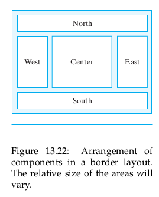

<!DOCTYPE html>
<html>
  <head>
    <meta charset="utf-8">
    <meta http-equiv="X-UA-Compatible" content="IE=edge">
    <meta name="viewport" content="width=device-width, initial-scale=1">
    <!-- The above 3 meta tags *must* come first in the head; any other head content must come *after* these tags -->
    <meta name="generator" content="pandoc">
    <meta name="description" content="">
    <meta name="author" content="Mark Lucernas">
    <meta name="dcterms.date" content="2020-05-04">

    <title>CISC 190 Module 7</title>

    <!-- KaTeX 0.13.11 https://katex.org/docs/browser.html -->
    <link href="../../../../../templates/katex/katex.min.css" rel="stylesheet">
    <!-- The loading of KaTeX is deferred to speed up page rendering -->
    <script defer src="../../../../../templates/katex/katex.min.js"></script>
    <!-- To automatically render math in text elements, include the auto-render extension: -->
    <script defer src="../../../../../templates/katex/contrib/auto-render.min.js" onload="renderMathInElement(document.body);"></script>

    <!-- For animated toc sidebar -->
    <link href="https://cdnjs.cloudflare.com/ajax/libs/normalize/5.0.0/normalize.min.css" rel="stylesheet" type="text/css">
    <link href="../../../../../templates/css/animated-toc.css" rel="stylesheet">
    <!-- Bootstrap core CSS -->
    <link href="../../../../../templates/css/bootstrap.min.css" rel="stylesheet">
    <!-- IE10 viewport hack for Surface/desktop Windows 8 bug -->
    <link href="../../../../../templates/css/ie10-viewport-bug-workaround.css" rel="stylesheet">
    <!-- Custom styles for this template -->
    <link href="../../../../../templates/css/dashboard.css" rel="stylesheet">
    <style type="text/css">code{white-space: pre;}</style>
    <style type="text/css">
pre > code.sourceCode { white-space: pre; position: relative; }
pre > code.sourceCode > span { display: inline-block; line-height: 1.25; }
pre > code.sourceCode > span:empty { height: 1.2em; }
.sourceCode { overflow: visible; }
code.sourceCode > span { color: inherit; text-decoration: inherit; }
div.sourceCode { margin: 1em 0; }
pre.sourceCode { margin: 0; }
@media screen {
div.sourceCode { overflow: auto; }
}
@media print {
pre > code.sourceCode { white-space: pre-wrap; }
pre > code.sourceCode > span { text-indent: -5em; padding-left: 5em; }
}
pre.numberSource code
  { counter-reset: source-line 0; }
pre.numberSource code > span
  { position: relative; left: -4em; counter-increment: source-line; }
pre.numberSource code > span > a:first-child::before
  { content: counter(source-line);
    position: relative; left: -1em; text-align: right; vertical-align: baseline;
    border: none; display: inline-block;
    -webkit-touch-callout: none; -webkit-user-select: none;
    -khtml-user-select: none; -moz-user-select: none;
    -ms-user-select: none; user-select: none;
    padding: 0 4px; width: 4em;
    color: #aaaaaa;
  }
pre.numberSource { margin-left: 3em; border-left: 1px solid #aaaaaa;  padding-left: 4px; }
div.sourceCode
  {   }
@media screen {
pre > code.sourceCode > span > a:first-child::before { text-decoration: underline; }
}
code span.al { color: #ff0000; font-weight: bold; } /* Alert */
code span.an { color: #60a0b0; font-weight: bold; font-style: italic; } /* Annotation */
code span.at { color: #7d9029; } /* Attribute */
code span.bn { color: #40a070; } /* BaseN */
code span.bu { } /* BuiltIn */
code span.cf { color: #007020; font-weight: bold; } /* ControlFlow */
code span.ch { color: #4070a0; } /* Char */
code span.cn { color: #880000; } /* Constant */
code span.co { color: #60a0b0; font-style: italic; } /* Comment */
code span.cv { color: #60a0b0; font-weight: bold; font-style: italic; } /* CommentVar */
code span.do { color: #ba2121; font-style: italic; } /* Documentation */
code span.dt { color: #902000; } /* DataType */
code span.dv { color: #40a070; } /* DecVal */
code span.er { color: #ff0000; font-weight: bold; } /* Error */
code span.ex { } /* Extension */
code span.fl { color: #40a070; } /* Float */
code span.fu { color: #06287e; } /* Function */
code span.im { } /* Import */
code span.in { color: #60a0b0; font-weight: bold; font-style: italic; } /* Information */
code span.kw { color: #007020; font-weight: bold; } /* Keyword */
code span.op { color: #666666; } /* Operator */
code span.ot { color: #007020; } /* Other */
code span.pp { color: #bc7a00; } /* Preprocessor */
code span.sc { color: #4070a0; } /* SpecialChar */
code span.ss { color: #bb6688; } /* SpecialString */
code span.st { color: #4070a0; } /* String */
code span.va { color: #19177c; } /* Variable */
code span.vs { color: #4070a0; } /* VerbatimString */
code span.wa { color: #60a0b0; font-weight: bold; font-style: italic; } /* Warning */
    </style>
  </head>

  <body>

<!-- Nav bar -->
    <nav class="navbar navbar-inverse navbar-fixed-top">
      <div class="container-fluid">
        <div class="navbar-header">
          <button type="button" class="navbar-toggle collapsed" data-toggle="collapse" data-target="#navbar" aria-expanded="false" aria-controls="navbar">
            <span class="sr-only">Toggle navigation</span>
            <span class="icon-bar"></span>
            <span class="icon-bar"></span>
            <span class="icon-bar"></span>
          </button>
          <a class="navbar-brand" href="#">School Wiki</a>
        </div>
        <!-- <div id="navbar" class="navbar-collapse collapse">                                                                                                                 -->
        <!--   <ul class="nav navbar-nav">                                                                                                                                      -->
        <!--     <li><a href="#">doc1</a></li>                                                                                                                                  -->
        <!--     <li><a href="#">doc2</a></li>                                                                                                                                  -->
        <!--     <li><a href="#">doc3</a></li>                                                                                                                                  -->
        <!--     <li class="dropdown">                                                                                                                                          -->
        <!--       <a href="#" class="dropdown-toggle" data-toggle="dropdown" role="button" aria-haspopup="true" aria-expanded="false">Dropdown <span class="caret"></span></a> -->
        <!--       <ul class="dropdown-menu">                                                                                                                                   -->
        <!--         <li><a href="#">Action</a></li>                                                                                                                            -->
        <!--         <li><a href="#">Another action</a></li>                                                                                                                    -->
        <!--         <li><a href="#">Something else here</a></li>                                                                                                               -->
        <!--         <li role="separator" class="divider"></li>                                                                                                                 -->
        <!--         <li class="dropdown-header">Nav header</li>                                                                                                                -->
        <!--         <li><a href="#">Separated link</a></li>                                                                                                                    -->
        <!--         <li><a href="#">One more separated link</a></li>                                                                                                           -->
        <!--       </ul>                                                                                                                                                        -->
        <!--     </li>                                                                                                                                                          -->
        <!--   </ul>                                                                                                                                                            -->
        <!-- </div>                                                                                                                                                             -->
      </div>
    </nav>

    <div class="container-fluid">
      <div class="row">

<!-- Table of Contents -->
        <nav id="sidebar" class="col-sm-3 col-md-2 sidebar toc">
          <ul>
          <li><a href="#module-7-advanced-topics">Module 7: Advanced Topics</a>
          <ul>
          <li><a href="#chapter-11-creating-classes">Chapter 11: Creating Classes</a>
          <ul>
          <li><a href="#reusing-a-class-via-inheritance">11.9 Reusing A Class Via Inheritance</a>
          <ul>
          <li><a href="#dynamic-runtime-binding">11.9. Dynamic (Runtime) Binding</a></li>
          </ul></li>
          </ul></li>
          <li><a href="#chapter-13-graphical-user-interfaces">Chapter 13: Graphical User Interfaces</a>
          <ul>
          <li><a href="#introduction">Introduction</a></li>
          <li><a href="#java-guis-from-awt-to-swing">13.2 Java GUIs: From AWT to Swing</a>
          <ul>
          <li><a href="#heavyweight-versus-lightweight-components">13.2.1 Heavyweight Versus Lightweight Components</a></li>
          </ul></li>
          <li><a href="#the-swing-compoent-set">13.3 The Swing Compoent Set</a></li>
          <li><a href="#object-oriented-design-model-view-controller-architecture">13.4 Object-Oriented Design: Model-View-Controller Architecture</a>
          <ul>
          <li><a href="#pluggable-look-and-feel">13.4.1 Pluggable Look and Feel</a></li>
          </ul></li>
          <li><a href="#the-java-event-model">13.5 The Java Event Model</a>
          <ul>
          <li><a href="#event-classes">13.5.1 Event Classes</a></li>
          </ul></li>
          <li><a href="#case-study-designing-a-basic-gui">13.6 CASE STUDY: Designing a Basic GUI</a>
          <ul>
          <li><a href="#the-metric-converter-application">13.6.1 The Metric Converter Application</a></li>
          <li><a href="#inner-classes-and-adapter-classes">13.6.2 Inner Classes and Adapter Classes</a></li>
          <li><a href="#gui-design-critique">13.6.3 GUI Design Critique</a></li>
          <li><a href="#extending-the-basic-gui-button-array">13.6.4 Extending the Basic GUI: Button Array</a></li>
          </ul></li>
          <li><a href="#containers-and-layout-managers">13.7 Containers and Layout Managers</a>
          <ul>
          <li><a href="#layout-managers">13.7.1 Layout Managers</a></li>
          <li><a href="#the-gridlayout-manager">13.7.2 The GridLayout Manager</a></li>
          <li><a href="#the-borderlayout-manager">13.7.4 The BorderLayout Manager</a></li>
          </ul></li>
          <li><a href="#checkboxes-radio-buttons-and-borders">13.8 Checkboxes, Radio Buttons, and Borders</a>
          <ul>
          <li><a href="#checkbox-and-radio-button-arrays">13.8.1 Checkbox and Radio Button Arrays</a></li>
          <li><a href="#swing-borders">13.8.2 Swing Borders</a></li>
          <li><a href="#the-boxlayout-manager">13.8.3 The BoxLayout Manager</a></li>
          <li><a href="#the-itemlistener-interface">13.8.4 The ItemListener Interface</a></li>
          <li><a href="#the-orderapplet">13.8.5 The OrderApplet</a></li>
          </ul></li>
          <li><a href="#menus-and-scroll-panes">13.9 Menus and Scroll Panes</a></li>
          </ul></li>
          <li><a href="#file-input-and-output">File Input and Output</a>
          <ul>
          <li><a href="#creating-a-handle-to-a-file">Creating a Handle to a File</a></li>
          <li><a href="#reading-from-a-text-file">Reading from a Text File</a></li>
          <li><a href="#writing-to-a-text-file">Writing to a Text File</a></li>
          </ul></li>
          </ul></li>
          <li><a href="#resources">Resources</a></li>
          </ul>
          <svg class="toc-marker" width="200" height="200" xmlns="http://www.w3.org/2000/svg">
            <path stroke="#444" stroke-width="3" fill="transparent" stroke-dasharray="0, 0, 0, 1000" stroke-linecap="round" stroke-linejoin="round" transform="translate(-0.5, -0.5)" />
          </svg>
        </nav>
        <div class="col-sm-9 col-sm-offset-3 col-md-10 col-md-offset-2 main">

<!-- Header -->
          <header>
            <div class="jumbotron">
              <div class="page-header">
                <a href="../../../index.html">Wiki Root</a> | <a href="../index.html">index</a>
                <h1 class="title">
                  CISC 190 Module 7
                </h1>
                <hr style="border: 1px solid grey;border-radius: 5px;">
                <h4 class="summary" style="text-align: center;">Inheritance and Polymorphism</h4>
              </div>
            </div>
          </header>
          <div class="h5 text-muted">
            <h5 class="author">Mark Lucernas</h5>
            <h5 class="date">2020-05-04</h5>
          </div>

<!-- Contents -->
          <article class="contents">
<h1 id="module-7-advanced-topics">Module 7: Advanced Topics</h1>
<h2 id="chapter-11-creating-classes">Chapter 11: Creating Classes</h2>
<ul>
<li><a href="../../../../files/spring-2020/CISC-190/module-7/java_book_mediaComp_ch-11.pdf">⬇ Chapter 11: Creating Classes</a></li>
</ul>
<h3 id="reusing-a-class-via-inheritance">11.9 Reusing A Class Via Inheritance</h3>
<p>In section 11.2.2, we saw that you can specify the parent class when you declare a class using the extends keyword. If you don’t specify the parent class the parent class will be <code>Object</code>.</p>
<p>Usually, the Java Virtual Machine (JVM) will start looking for a method in the class that created the current object. but if we use the keyword <code>super</code> to invoke a method, we will start looking for the method in the <em>parent</em> class of the class that created the current object.</p>
<div class="sourceCode" id="cb1"><pre class="sourceCode java"><code class="sourceCode java"><span id="cb1-1"><a href="#cb1-1" aria-hidden="true" tabindex="-1"></a><span class="kw">public</span> <span class="kw">class</span> ConfusedTurtle <span class="kw">extends</span> Turtle</span>
<span id="cb1-2"><a href="#cb1-2" aria-hidden="true" tabindex="-1"></a><span class="op">{</span></span>
<span id="cb1-3"><a href="#cb1-3" aria-hidden="true" tabindex="-1"></a>  <span class="co">/**</span> Method to turn right <span class="co">(</span>but a confused</span>
<span id="cb1-4"><a href="#cb1-4" aria-hidden="true" tabindex="-1"></a>   <span class="co">*</span> turtle will actually turn left<span class="co">)</span></span>
<span id="cb1-5"><a href="#cb1-5" aria-hidden="true" tabindex="-1"></a>   <span class="co">*/</span></span>
<span id="cb1-6"><a href="#cb1-6" aria-hidden="true" tabindex="-1"></a>  <span class="kw">public</span> <span class="dt">void</span> <span class="fu">turnRight</span><span class="op">()</span></span>
<span id="cb1-7"><a href="#cb1-7" aria-hidden="true" tabindex="-1"></a>  <span class="op">{</span></span>
<span id="cb1-8"><a href="#cb1-8" aria-hidden="true" tabindex="-1"></a>    <span class="kw">super</span><span class="op">.</span><span class="fu">turnLeft</span><span class="op">();</span></span>
<span id="cb1-9"><a href="#cb1-9" aria-hidden="true" tabindex="-1"></a>  <span class="op">}</span></span>
<span id="cb1-10"><a href="#cb1-10" aria-hidden="true" tabindex="-1"></a></span>
<span id="cb1-11"><a href="#cb1-11" aria-hidden="true" tabindex="-1"></a>  <span class="co">/**</span> Method to turn left <span class="co">(</span>but a confused</span>
<span id="cb1-12"><a href="#cb1-12" aria-hidden="true" tabindex="-1"></a>   <span class="co">*</span> turtle will actually turn right<span class="co">)</span></span>
<span id="cb1-13"><a href="#cb1-13" aria-hidden="true" tabindex="-1"></a>   <span class="co">*/</span></span>
<span id="cb1-14"><a href="#cb1-14" aria-hidden="true" tabindex="-1"></a>  <span class="kw">public</span> <span class="dt">void</span> <span class="fu">turnLeft</span><span class="op">()</span></span>
<span id="cb1-15"><a href="#cb1-15" aria-hidden="true" tabindex="-1"></a>  <span class="op">{</span></span>
<span id="cb1-16"><a href="#cb1-16" aria-hidden="true" tabindex="-1"></a>    <span class="kw">super</span><span class="op">.</span><span class="fu">turnRight</span><span class="op">();</span></span>
<span id="cb1-17"><a href="#cb1-17" aria-hidden="true" tabindex="-1"></a>  <span class="op">}</span></span>
<span id="cb1-18"><a href="#cb1-18" aria-hidden="true" tabindex="-1"></a><span class="op">}</span></span></code></pre></div>
<p>This will get an error because it doesn’t have a constructor yet.</p>
<blockquote>
<p><code>super()</code> is a call to the parent’s no-argument constructor.</p>
</blockquote>
<div class="sourceCode" id="cb2"><pre class="sourceCode java"><code class="sourceCode java"><span id="cb2-1"><a href="#cb2-1" aria-hidden="true" tabindex="-1"></a><span class="kw">public</span> <span class="kw">class</span> ConfusedTurtle <span class="kw">extends</span> Turtle</span>
<span id="cb2-2"><a href="#cb2-2" aria-hidden="true" tabindex="-1"></a><span class="op">{</span></span>
<span id="cb2-3"><a href="#cb2-3" aria-hidden="true" tabindex="-1"></a>  <span class="co">//////////////////// constructors ////////////////////</span></span>
<span id="cb2-4"><a href="#cb2-4" aria-hidden="true" tabindex="-1"></a></span>
<span id="cb2-5"><a href="#cb2-5" aria-hidden="true" tabindex="-1"></a>  <span class="co">/**</span></span>
<span id="cb2-6"><a href="#cb2-6" aria-hidden="true" tabindex="-1"></a>   <span class="co">*</span> A constructor that takes a ModelDisplay object</span>
<span id="cb2-7"><a href="#cb2-7" aria-hidden="true" tabindex="-1"></a><span class="co">   * @</span>param modelDisplayObj the thing that does the display</span>
<span id="cb2-8"><a href="#cb2-8" aria-hidden="true" tabindex="-1"></a>   <span class="co">*/</span></span>
<span id="cb2-9"><a href="#cb2-9" aria-hidden="true" tabindex="-1"></a>   <span class="kw">public</span> <span class="fu">ConfusedTurtle</span><span class="op">(</span>ModelDisplay modelDisplayObj<span class="op">)</span></span>
<span id="cb2-10"><a href="#cb2-10" aria-hidden="true" tabindex="-1"></a>   <span class="op">{</span></span>
<span id="cb2-11"><a href="#cb2-11" aria-hidden="true" tabindex="-1"></a>      <span class="co">// use parent constructor</span></span>
<span id="cb2-12"><a href="#cb2-12" aria-hidden="true" tabindex="-1"></a>      <span class="kw">super</span><span class="op">(</span>modelDisplayObj<span class="op">);</span></span>
<span id="cb2-13"><a href="#cb2-13" aria-hidden="true" tabindex="-1"></a>   <span class="op">}</span></span>
<span id="cb2-14"><a href="#cb2-14" aria-hidden="true" tabindex="-1"></a></span>
<span id="cb2-15"><a href="#cb2-15" aria-hidden="true" tabindex="-1"></a>   <span class="co">//////////////////// methods ////////////////////</span></span>
<span id="cb2-16"><a href="#cb2-16" aria-hidden="true" tabindex="-1"></a></span>
<span id="cb2-17"><a href="#cb2-17" aria-hidden="true" tabindex="-1"></a>  <span class="co">/**</span> Method to turn right <span class="co">(</span>but a confused</span>
<span id="cb2-18"><a href="#cb2-18" aria-hidden="true" tabindex="-1"></a>   <span class="co">*</span> turtle will actually turn left<span class="co">)</span></span>
<span id="cb2-19"><a href="#cb2-19" aria-hidden="true" tabindex="-1"></a>   <span class="co">*/</span></span>
<span id="cb2-20"><a href="#cb2-20" aria-hidden="true" tabindex="-1"></a>  <span class="kw">public</span> <span class="dt">void</span> <span class="fu">turnRight</span><span class="op">()</span></span>
<span id="cb2-21"><a href="#cb2-21" aria-hidden="true" tabindex="-1"></a>  <span class="op">{</span></span>
<span id="cb2-22"><a href="#cb2-22" aria-hidden="true" tabindex="-1"></a>    <span class="kw">super</span><span class="op">.</span><span class="fu">turnLeft</span><span class="op">();</span></span>
<span id="cb2-23"><a href="#cb2-23" aria-hidden="true" tabindex="-1"></a>  <span class="op">}</span></span>
<span id="cb2-24"><a href="#cb2-24" aria-hidden="true" tabindex="-1"></a></span>
<span id="cb2-25"><a href="#cb2-25" aria-hidden="true" tabindex="-1"></a>  <span class="co">/**</span> Method to turn left <span class="co">(</span>but a confused</span>
<span id="cb2-26"><a href="#cb2-26" aria-hidden="true" tabindex="-1"></a>   <span class="co">*</span> turtle will actually turn right<span class="co">)</span></span>
<span id="cb2-27"><a href="#cb2-27" aria-hidden="true" tabindex="-1"></a>   <span class="co">*/</span></span>
<span id="cb2-28"><a href="#cb2-28" aria-hidden="true" tabindex="-1"></a>  <span class="kw">public</span> <span class="dt">void</span> <span class="fu">turnLeft</span><span class="op">()</span></span>
<span id="cb2-29"><a href="#cb2-29" aria-hidden="true" tabindex="-1"></a>  <span class="op">{</span></span>
<span id="cb2-30"><a href="#cb2-30" aria-hidden="true" tabindex="-1"></a>    <span class="kw">super</span><span class="op">.</span><span class="fu">turnRight</span><span class="op">();</span></span>
<span id="cb2-31"><a href="#cb2-31" aria-hidden="true" tabindex="-1"></a>  <span class="op">}</span></span>
<span id="cb2-32"><a href="#cb2-32" aria-hidden="true" tabindex="-1"></a></span>
<span id="cb2-33"><a href="#cb2-33" aria-hidden="true" tabindex="-1"></a>  <span class="co">/**</span></span>
<span id="cb2-34"><a href="#cb2-34" aria-hidden="true" tabindex="-1"></a>   <span class="co">*</span> Method to turn by the passed degrees</span>
<span id="cb2-35"><a href="#cb2-35" aria-hidden="true" tabindex="-1"></a>   <span class="co">*</span> <span class="co">(</span>a confused turtle will turn by <span class="co">360</span> <span class="co">-</span> the passed degrees<span class="co">)</span></span>
<span id="cb2-36"><a href="#cb2-36" aria-hidden="true" tabindex="-1"></a>   <span class="co">*/</span></span>
<span id="cb2-37"><a href="#cb2-37" aria-hidden="true" tabindex="-1"></a>   <span class="kw">public</span> <span class="dt">void</span> <span class="fu">turn</span><span class="op">(</span><span class="dt">int</span> degrees<span class="op">)</span></span>
<span id="cb2-38"><a href="#cb2-38" aria-hidden="true" tabindex="-1"></a>   <span class="op">{</span></span>
<span id="cb2-39"><a href="#cb2-39" aria-hidden="true" tabindex="-1"></a>    <span class="kw">super</span><span class="op">.</span><span class="fu">turn</span><span class="op">(</span><span class="dv">360</span><span class="op">-</span>degrees<span class="op">);</span></span>
<span id="cb2-40"><a href="#cb2-40" aria-hidden="true" tabindex="-1"></a>   <span class="op">}</span></span>
<span id="cb2-41"><a href="#cb2-41" aria-hidden="true" tabindex="-1"></a><span class="op">}</span></span></code></pre></div>
<blockquote>
<p><em>superclass</em> constructor must be the first line of code in a constructor.<br> <code>private</code> methods <em>cannot</em> be inherited.</p>
</blockquote>
<p>Additional <code>visibiility</code> types</p>
<ul>
<li><code>final</code> – Final methods cannot be overridden by the subclass that inherits the method. Also, it means that the Java compiler can bind it to the correct implementation.</li>
</ul>
<h4 id="dynamic-runtime-binding">11.9. Dynamic (Runtime) Binding</h4>
<p>Every object in Java keeps a reference to the class that created it. You can say that an object knows what type it is. When a method is invoked on an object, the Java Virtual Machine (JVM) will always start looking for it in the class that created in method the for looking start will which object, unless you use <code>super.method()</code>, which will start looking for the method in the parent class of the class that contains the currently executing code.</p>
<p>When you declare a variable you can assign an object to it that is of the declared type, <em>or any child of the declared type.</em> So we can declare a variable of the typ Turtle and use it to reference an object of the class ConfusedTurtle.</p>
<p>This will get the same result as before:</p>
<div class="sourceCode" id="cb3"><pre class="sourceCode java"><code class="sourceCode java"><span id="cb3-1"><a href="#cb3-1" aria-hidden="true" tabindex="-1"></a>World world <span class="op">=</span> <span class="kw">new</span> <span class="fu">World</span><span class="op">();</span></span>
<span id="cb3-2"><a href="#cb3-2" aria-hidden="true" tabindex="-1"></a>Turtle fred <span class="op">=</span> <span class="kw">new</span> <span class="fu">ConfusedTurtle</span><span class="op">(</span>world<span class="op">);</span></span>
<span id="cb3-3"><a href="#cb3-3" aria-hidden="true" tabindex="-1"></a>fred<span class="op">.</span><span class="fu">turn</span><span class="op">(</span><span class="dv">90</span><span class="op">);</span></span></code></pre></div>
<h2 id="chapter-13-graphical-user-interfaces">Chapter 13: Graphical User Interfaces</h2>
<ul>
<li><a href="../../../../files/spring-2020/CISC-190/java_book_javaJavaJava.pdf">⬇ Java, Java, Java Object-Oriented Problem Solving 3rd Ed</a></li>
</ul>
<h3 id="introduction">Introduction</h3>
<p><a name="graphical-user-interface-term"><strong>Graphical user interface (GUI)</strong></a></p>
<ul>
<li>Creates a certain way of interacting with a program visually.</li>
</ul>
<h3 id="java-guis-from-awt-to-swing">13.2 Java GUIs: From AWT to Swing</h3>
<p>Two distinct libraries of GUI components since JDK in 2000.</p>
<ol type="1">
<li><p><a name="abstract-windowing-toolkit-term"><strong>Abstract Windowing Toolkit (AWT)</strong></a></p>
<ul>
<li>AWT has been a part of Java since the original 1.0 version of the JDK 1.0.</li>
<li>Although the original version of the AWT was suitable for developing Java applets, it wasn’t powerful enough to support full-fledged applications. Commonly used programs, such as word processors and spreadsheets, have GUI requirements that were too much for the original AWT.</li>
<li><strong>Dependent on the underlying operating system</strong>.
<ul>
<li>For instance, Java GUI program running on a Windows platform had to depend on Windows code for implementations of its buttons and text fields.</li>
</ul></li>
</ul></li>
<li><p><a name="swing-component-set-term"><strong>Swing component set</strong></a></p>
<ul>
<li>Was first introduce in JDK 1.1 and was extensively revised in JDK 1.2.</li>
<li>Part of the <em>Java Foundation Classes</em> (JFC), a collection of <strong>classes that do not depend as much on the underlying platfrom</strong></li>
<li>Rendered entirely by Java code.</li>
<li>More portable than those which rely on AWT components and the underlying platform.
<ul>
<li>For instance, a program that uses Swing components will have the same look and feel on a Mac, Windows, or Unix platform.</li>
</ul></li>
</ul></li>
</ol>
<h4 id="heavyweight-versus-lightweight-components">13.2.1 Heavyweight Versus Lightweight Components</h4>
<p>AWT components are based on the <strong>peer model</strong>. AWT components are called <em>heavyweight</em> because they depend on the native (peer) system for their drawing and rendering. This is why an AWT button on a Windows platform looks just like a Windows button.</p>
<p>The interaction between Java and the native windowing system requires a good deal of overhead, thereby affecting the overall efficiency of the system.</p>
<p><a name="peer-model-term"><strong>Peer model</strong></a></p>
<ul>
<li>A design in which every AWT component has a corresponding class (a <em>peer</em>) written in the underlying system’s code.</li>
<li>For example, the <code>java.awt.button</code> class has a peer named <code>java.awt.peer.Button</code>, that serves as the interface between the Java code and the computer’s underlying windowing system.</li>
<li>Methods in the peer class are written in so-called <em>native</em> code–that is, non-Java code of the underlying operating system. Therefore, AWT components are inherently platform dependent.</li>
</ul>
<p>By contrast, Swing components is a <strong>lightweight component</strong>.</p>
<p><a name="lightweight-component-term"><strong>Lightweight component</strong></a></p>
<ul>
<li>One that is written entirely in Java.</li>
<li>Because they do not depend on underlying system code, Swing components are more efficient and more portable than corresponding AWT components.</li>
</ul>
<p>Even if a Java program uses Swing components excusively, that will still not break the dependence on the AWT.</p>
<h3 id="the-swing-compoent-set">13.3 The Swing Compoent Set</h3>
<p>Java’s Swing compoents are defined in a collection of packages named <code>javax.swing.*</code>. Swing packages incude the following:</p>
<div class="sourceCode" id="cb4"><pre class="sourceCode java"><code class="sourceCode java"><span id="cb4-1"><a href="#cb4-1" aria-hidden="true" tabindex="-1"></a><span class="kw">import</span> <span class="im">javax</span><span class="op">.</span><span class="im">swing</span><span class="op">.</span><span class="im">event</span><span class="op">.*</span></span>
<span id="cb4-2"><a href="#cb4-2" aria-hidden="true" tabindex="-1"></a><span class="kw">import</span> <span class="im">javax</span><span class="op">.</span><span class="im">swing</span><span class="op">.</span><span class="im">text</span><span class="op">.*</span></span>
<span id="cb4-3"><a href="#cb4-3" aria-hidden="true" tabindex="-1"></a><span class="kw">import</span> <span class="im">javax</span><span class="op">.</span><span class="im">swing</span><span class="op">.</span><span class="im">plaf</span><span class="op">.*</span></span></code></pre></div>
<p>The <code>javax.swing.event</code> package defines the various Swing events and their listeners, such as the <code>Menuevent</code> and the <code>MenyListener</code>. (int the AWT, the AWT events and listeners were defined in <code>java.awt.event</code>.)</p>
<p>The <code>javax.swing.text</code> package contains the classes for <code>JTextField</code> and <code>JTextComponent</code>. The Swing text components are more complex than their AWT counterparts. For example, one of their important features is the ability to undo changes made to the text they contain. This feature is crucial for building sophisticated word-processing applications.</p>
<p>The <code>javax.swing.plaf</code> package contains Swing’s look-and-feel classes. The term <em>plaf</em> is an acronym for <strong>pluggable look and feel</strong>. It refers to the fact that changing application’s look and feel is a simple matter of “plugging in” a different plaf model.</p>
<h3 id="object-oriented-design-model-view-controller-architecture">13.4 Object-Oriented Design: Model-View-Controller Architecture</h3>
<figure>
<figcaption aria-hidden="true">Figure 13.3 The model-view-controller architecture</figcaption>
</figure>
<p>Java’s Swing components have been implemented using an object-oriented design known as the <strong>model-view-controller (MVC)</strong> model. any Swing component can be considered in terms of three independent aspects: what state it’s in (its model), how it looks (its view), and what it does (its controller).</p>
<p><strong>Model</strong></p>
<ul>
<li>When you click a button, its internal state changes from pressed to unpressed. You’ve also probably seen buttons that were disabled–that is, in a state where they ignore your clicks.</li>
<li>Taken together, such properties constitute the button’s model. Of course, a button’s view–how it looks– depends on its model. When a button is pressed, it has one appearance, and when it is disabled, it has another.</li>
</ul>
<p><strong>View</strong></p>
<ul>
<li>For example, a button’s role is to appear on the interface waiting ot be clicked. When it is clicked, the button’s appearance changes. If you were designing an interface for a button, you would need visual representations for both the clicked and the unclicked button (as well as other possible states).</li>
</ul>
<p><strong>Controller</strong></p>
<ul>
<li>Because a button’s state will change when it is clicked or when it is enabled by the program, some objects needs to keep track of these changes. That part of the component is its controller.</li>
</ul>
<h4 id="pluggable-look-and-feel">13.4.1 Pluggable Look and Feel</h4>
<p>The MVC model uses a clear division of labor to implement a GUI component. The main advantage of this design is the independence between the model, the view, and the controller.</p>
<p>By combining the view and controller into a single class, Swing makes it even easier to change a component’s look and feel. For example, to design your own look and feel for a <code>JButton</code> you would define a class that implemented all of the methods in <code>BasicButtonUI</code>. Of course, this is a job for an experience software developer.</p>
<p>However, if you just want to set your program to use one of the pre-defined look and feel models, you can simply use the <code>UIManager.setLookFeel()</code> method:</p>
<div class="sourceCode" id="cb5"><pre class="sourceCode java"><code class="sourceCode java"><span id="cb5-1"><a href="#cb5-1" aria-hidden="true" tabindex="-1"></a><span class="kw">public</span> <span class="dt">static</span> <span class="dt">void</span> <span class="fu">main</span> <span class="op">(</span><span class="bu">String</span> args<span class="op">[])</span> <span class="op">{</span></span>
<span id="cb5-2"><a href="#cb5-2" aria-hidden="true" tabindex="-1"></a>  <span class="cf">try</span> <span class="op">{</span></span>
<span id="cb5-3"><a href="#cb5-3" aria-hidden="true" tabindex="-1"></a>    <span class="bu">UIManager</span><span class="op">.</span><span class="fu">setLookAndFeel</span><span class="op">(</span></span>
<span id="cb5-4"><a href="#cb5-4" aria-hidden="true" tabindex="-1"></a>      <span class="st">&quot;javax.swing.plaf.metal.MetalLookAndFeel&quot;</span><span class="op">);</span></span>
<span id="cb5-5"><a href="#cb5-5" aria-hidden="true" tabindex="-1"></a>  <span class="op">}</span> <span class="cf">catch</span> <span class="op">(</span><span class="bu">Exception</span> e<span class="op">)</span> <span class="op">{</span></span>
<span id="cb5-6"><a href="#cb5-6" aria-hidden="true" tabindex="-1"></a>    <span class="bu">System</span><span class="op">.</span><span class="fu">out</span><span class="op">.</span><span class="fu">err</span><span class="op">(</span><span class="st">&quot;Exception: &quot;</span> <span class="op">+</span> e<span class="op">.</span><span class="fu">getMessage</span><span class="op">());</span></span>
<span id="cb5-7"><a href="#cb5-7" aria-hidden="true" tabindex="-1"></a>  <span class="op">}</span></span>
<span id="cb5-8"><a href="#cb5-8" aria-hidden="true" tabindex="-1"></a><span class="op">}</span></span></code></pre></div>
<h3 id="the-java-event-model">13.5 The Java Event Model</h3>
<p>Every keystroke and mouse click, every time a disk is inserted into a disk drive, an <strong>event</strong> is generated.</p>
<p>When a Java program is running, events generated by the hardware are passed up through the operating system (and through the browser, for applets) to the program. Those events that belong to the program must be handled by the program.</p>
<p>In Java, whenever something happens within a GUI component, an event object is generated and passed to the <em>event listener</em> that has been registered to handle that component’s events.</p>
<p>Suppose you create a <code>JButton</code> in a GUI as follows:</p>
<div class="sourceCode" id="cb6"><pre class="sourceCode java"><code class="sourceCode java"><span id="cb6-1"><a href="#cb6-1" aria-hidden="true" tabindex="-1"></a><span class="kw">private</span> <span class="bu">JButton</span> clickme <span class="op">=</span> <span class="kw">new</span> <span class="bu">JButton</span><span class="op">(</span><span class="st">&quot;ClickMe&quot;</span><span class="op">);</span></span></code></pre></div>
<p>Whenever the user clicks the <code>JButton</code>, and <code>ActionEvent</code> is generated.</p>
<p>In order to handle these events, the GUI must register the <code>JButton</code> with a listener object that listens for action events. This can be done in an applet’s <code>init()</code> method or in an application’s constructor method, as in this example:</p>
<div class="sourceCode" id="cb7"><pre class="sourceCode java"><code class="sourceCode java"><span id="cb7-1"><a href="#cb7-1" aria-hidden="true" tabindex="-1"></a><span class="kw">public</span> <span class="fu">MyGui</span><span class="op">()</span> <span class="op">{</span></span>
<span id="cb7-2"><a href="#cb7-2" aria-hidden="true" tabindex="-1"></a>  <span class="co">// Add clickme to the GUI and assign it a listener</span></span>
<span id="cb7-3"><a href="#cb7-3" aria-hidden="true" tabindex="-1"></a>  <span class="fu">add</span><span class="op">(</span>clickme<span class="op">);</span></span>
<span id="cb7-4"><a href="#cb7-4" aria-hidden="true" tabindex="-1"></a>  clickme<span class="op">.</span><span class="fu">addActionListener</span><span class="op">(</span><span class="kw">this</span><span class="op">);</span></span>
<span id="cb7-5"><a href="#cb7-5" aria-hidden="true" tabindex="-1"></a><span class="op">}</span></span></code></pre></div>
<p>In this case, we have designated the GUI itself (this) as an <code>ActionListener</code> for <code>clickme</code>.</p>
<p><a name="listener-term"><strong>Listener</strong></a></p>
<ul>
<li>Is any object that implements a <em>listener interface</em> which is one of the interfaces derived from <code>java.util.EventListener</code></li>
<li>An <code>ActionListener</code> is an object that listens for and receives <code>ActionEvents</code>.</li>
</ul>
<p>In order to complete the event-handling code, the GUI must implement the <code>ActionListener</code> interface.</p>
<p>Here is a simple GUI application that handles action events on a <code>JButton</code>.</p>
<div class="sourceCode" id="cb8"><pre class="sourceCode java"><code class="sourceCode java"><span id="cb8-1"><a href="#cb8-1" aria-hidden="true" tabindex="-1"></a><span class="kw">import</span> <span class="im">javax</span><span class="op">.</span><span class="im">swing</span><span class="op">.*;</span></span>
<span id="cb8-2"><a href="#cb8-2" aria-hidden="true" tabindex="-1"></a><span class="kw">import</span> <span class="im">java</span><span class="op">.</span><span class="im">awt</span><span class="op">.</span><span class="im">event</span><span class="op">.*;</span></span>
<span id="cb8-3"><a href="#cb8-3" aria-hidden="true" tabindex="-1"></a></span>
<span id="cb8-4"><a href="#cb8-4" aria-hidden="true" tabindex="-1"></a><span class="kw">public</span> <span class="kw">class</span> MyGUI <span class="kw">extends</span> <span class="bu">JFrame</span> <span class="kw">implements</span> <span class="bu">ActionListener</span> <span class="op">{</span></span>
<span id="cb8-5"><a href="#cb8-5" aria-hidden="true" tabindex="-1"></a>  <span class="kw">private</span> <span class="bu">JButton</span> clickme <span class="op">=</span> <span class="kw">new</span> <span class="bu">JButton</span><span class="op">(</span><span class="st">&quot;ClickMe&quot;</span><span class="op">);</span></span>
<span id="cb8-6"><a href="#cb8-6" aria-hidden="true" tabindex="-1"></a></span>
<span id="cb8-7"><a href="#cb8-7" aria-hidden="true" tabindex="-1"></a>  <span class="kw">public</span> <span class="fu">MyGUI</span><span class="op">()</span> <span class="op">{</span></span>
<span id="cb8-8"><a href="#cb8-8" aria-hidden="true" tabindex="-1"></a>    <span class="co">// Add clickme to the GUI and assign it a listener</span></span>
<span id="cb8-9"><a href="#cb8-9" aria-hidden="true" tabindex="-1"></a>    <span class="fu">getContentPane</span><span class="op">().</span><span class="fu">add</span><span class="op">(</span>clickme<span class="op">);</span></span>
<span id="cb8-10"><a href="#cb8-10" aria-hidden="true" tabindex="-1"></a>    clickme<span class="op">.</span><span class="fu">addActionListener</span><span class="op">(</span><span class="kw">this</span><span class="op">);</span></span>
<span id="cb8-11"><a href="#cb8-11" aria-hidden="true" tabindex="-1"></a>    <span class="fu">setSize</span><span class="op">(</span><span class="dv">200</span><span class="op">,</span> <span class="dv">200</span><span class="op">);</span></span>
<span id="cb8-12"><a href="#cb8-12" aria-hidden="true" tabindex="-1"></a>    <span class="fu">setVisible</span><span class="op">(</span><span class="kw">true</span><span class="op">);</span></span>
<span id="cb8-13"><a href="#cb8-13" aria-hidden="true" tabindex="-1"></a>  <span class="op">}</span> <span class="co">// init()</span></span>
<span id="cb8-14"><a href="#cb8-14" aria-hidden="true" tabindex="-1"></a>  <span class="kw">public</span> <span class="dt">void</span> <span class="fu">actionPerformed</span><span class="op">(</span><span class="bu">ActionEvent</span> e<span class="op">)</span> <span class="op">{</span></span>
<span id="cb8-15"><a href="#cb8-15" aria-hidden="true" tabindex="-1"></a>    <span class="cf">if</span> <span class="op">(</span>e<span class="op">.</span><span class="fu">getSource</span><span class="op">()</span> <span class="op">==</span> clickme<span class="op">)</span> <span class="op">{</span></span>
<span id="cb8-16"><a href="#cb8-16" aria-hidden="true" tabindex="-1"></a>      clickme<span class="op">.</span><span class="fu">setText</span><span class="op">(</span>clickme<span class="op">.</span><span class="fu">getText</span><span class="op">()+</span><span class="st">&quot;*&quot;</span><span class="op">);</span></span>
<span id="cb8-17"><a href="#cb8-17" aria-hidden="true" tabindex="-1"></a>    <span class="op">}</span></span>
<span id="cb8-18"><a href="#cb8-18" aria-hidden="true" tabindex="-1"></a>  <span class="op">}</span> <span class="co">//actionPerformed()</span></span>
<span id="cb8-19"><a href="#cb8-19" aria-hidden="true" tabindex="-1"></a>  <span class="kw">public</span> <span class="dt">static</span> <span class="dt">void</span> <span class="fu">main</span> <span class="op">(</span><span class="bu">String</span> args<span class="op">[])</span> <span class="op">{</span></span>
<span id="cb8-20"><a href="#cb8-20" aria-hidden="true" tabindex="-1"></a>    MyGUI gui <span class="op">=</span> <span class="kw">new</span> <span class="fu">MyGUI</span><span class="op">();</span></span>
<span id="cb8-21"><a href="#cb8-21" aria-hidden="true" tabindex="-1"></a>  <span class="op">}</span></span>
<span id="cb8-22"><a href="#cb8-22" aria-hidden="true" tabindex="-1"></a><span class="op">}</span> <span class="co">// MyGUI</span></span></code></pre></div>
<p>Whenever the user click <code>clikcme</code>, that action is encapsulated within <code>ActionEvent</code> object and passed to the <code>actionPerformed()</code> method. For this example, it modifies the button’s label by appending an <strong>asterisk</strong> to it each time it is clicked.</p>
<p>The methods used to handle the <code>ActionEvent</code> are derived from the <code>java.util.EventObject</code> class, the root class for all events. The example uses the <code>getSource()</code> method to get a reference to the object that generated the event.</p>
<p>We can use <code>toString()</code> to see what information is contained in an event object.</p>
<h4 id="event-classes">13.5.1 Event Classes</h4>
<p>Although the event model is the same for both AWT and Swing classes, the Swing package introduces many additional events.</p>
<figure>
<figcaption aria-hidden="true">Table 13.1</figcaption>
</figure>
<p>Table 13.2 lists events that are new with the Swing classes.</p>
<figure>
<figcaption aria-hidden="true">Table 13.2</figcaption>
</figure>
<p>Full documentation about these classes and Swing components <a href="http://java.sun.com/j2se/1.5.0/docs/api/">here</a></p>
<h3 id="case-study-designing-a-basic-gui">13.6 CASE STUDY: Designing a Basic GUI</h3>
<h4 id="the-metric-converter-application">13.6.1 The Metric Converter Application</h4>
<div class="sourceCode" id="cb9"><pre class="sourceCode java"><code class="sourceCode java"><span id="cb9-1"><a href="#cb9-1" aria-hidden="true" tabindex="-1"></a><span class="kw">public</span> <span class="kw">class</span> MetricConverter <span class="op">{</span></span>
<span id="cb9-2"><a href="#cb9-2" aria-hidden="true" tabindex="-1"></a>  <span class="kw">public</span> <span class="dt">static</span> <span class="dt">double</span> <span class="fu">milesToKm</span><span class="op">(</span><span class="dt">double</span> miles<span class="op">)</span> <span class="op">{</span></span>
<span id="cb9-3"><a href="#cb9-3" aria-hidden="true" tabindex="-1"></a>    <span class="cf">return</span> miles <span class="op">/</span> <span class="fl">0.62</span><span class="op">;</span></span>
<span id="cb9-4"><a href="#cb9-4" aria-hidden="true" tabindex="-1"></a>  <span class="op">}</span></span>
<span id="cb9-5"><a href="#cb9-5" aria-hidden="true" tabindex="-1"></a><span class="op">}</span></span></code></pre></div>
<p>Can be invoked by:</p>
<div class="sourceCode" id="cb10"><pre class="sourceCode java"><code class="sourceCode java"><span id="cb10-1"><a href="#cb10-1" aria-hidden="true" tabindex="-1"></a>MetricConverter<span class="op">.</span><span class="fu">milesToKm</span><span class="op">(</span><span class="dv">10</span><span class="op">);</span></span></code></pre></div>
<h5 id="choosing-the-components">Choosing the Components</h5>
<p>Let’s now design a GUI to handle the interaction with the user.</p>
<ul>
<li>A <code>JLabel</code> is a display area for a short string of text, an image or both. Its AWT counterpart, the <code>Label</code>, cannot display images. A <code>JLabel</code> does not react to input. Therefore, it is used primarily to display a graphic or small amounts of static text. <strong>Perfectly suited to serve as a prompt</strong>.</li>
<li>A <code>JTextFiled</code> is a component that allows the user to edit a single line of text. It is identical to its AWT counterpart, the <code>TextField</code>. By using its <code>getText()</code> and <code>setText()</code> methods, a <code>JTextField</code> <strong>can be used for either inpur or output, or both</strong>. For this problem, we’ll use it to perform the interface’s input task.</li>
<li>A <code>JTextArea</code> is a multiline text area that can be used for either input or output. It is almost identical to the AWT <code>TextArea</code> component. One difference, howver, is that a <code>JTextArea</code> does not contain scrollbars by default. For this program, we’ll use the <code>JTextArea</code> <strong>for displaying the results of conversions</strong>. Because it is used solely for output in this program, we’ll make it <em>uneditable</em> to prevent the user from typing in it.</li>
<li>A <code>JButton</code> <strong>as our main control for this interface</strong>. By implementing the <code>ActionListener</code> interface we wil handle the user’s action events.</li>
</ul>
<h5 id="choosing-the-top-level-window">Choosing the Top-Level Window</h5>
<p>For applet interfaces, the top-level component would be a <code>JApplet</code>. For Java applications, you would typically use a <code>JFrame</code> as the top-evel window. Both these classes are subclasses of <code>Container</code>, so they are suitable for holding the components that make up of the interface.</p>
<h5 id="designing-a-layout">Designing a Layout</h5>
<figure>
<figcaption aria-hidden="true">Figure 13.10</figcaption>
</figure>
<p><a name="containment-hierarchy-term"><strong>Containment hierarchy</strong></a></p>
<ul>
<li>Also called a <strong>widget hierarchy</strong>, which shows the containment relationships among the various components.</li>
</ul>
<p>Here is a <code>Converter</code> class that implements a simple GUI interface.</p>
<div class="sourceCode" id="cb11"><pre class="sourceCode java"><code class="sourceCode java"><span id="cb11-1"><a href="#cb11-1" aria-hidden="true" tabindex="-1"></a><span class="kw">import</span> <span class="im">javax</span><span class="op">.</span><span class="im">swing</span><span class="op">.*;</span></span>
<span id="cb11-2"><a href="#cb11-2" aria-hidden="true" tabindex="-1"></a><span class="kw">import</span> <span class="im">java</span><span class="op">.</span><span class="im">awt</span><span class="op">.*;</span></span>
<span id="cb11-3"><a href="#cb11-3" aria-hidden="true" tabindex="-1"></a><span class="kw">import</span> <span class="im">java</span><span class="op">.</span><span class="im">awt</span><span class="op">.</span><span class="im">event</span><span class="op">.*;</span></span>
<span id="cb11-4"><a href="#cb11-4" aria-hidden="true" tabindex="-1"></a></span>
<span id="cb11-5"><a href="#cb11-5" aria-hidden="true" tabindex="-1"></a><span class="kw">public</span> <span class="kw">class</span> Converter <span class="kw">extends</span> <span class="bu">JFrame</span> <span class="kw">implements</span> <span class="bu">ActionListener</span> <span class="op">{</span></span>
<span id="cb11-6"><a href="#cb11-6" aria-hidden="true" tabindex="-1"></a>  <span class="kw">private</span> <span class="bu">JLabel</span> prompt <span class="op">=</span> <span class="kw">new</span> <span class="bu">JLabel</span><span class="op">(</span><span class="st">&quot;Distance in Miles: &quot;</span><span class="op">);</span></span>
<span id="cb11-7"><a href="#cb11-7" aria-hidden="true" tabindex="-1"></a>  <span class="kw">private</span> <span class="bu">JTextField</span> input <span class="op">=</span> <span class="kw">new</span> <span class="bu">JTextField</span><span class="op">(</span><span class="dv">6</span><span class="op">);</span></span>
<span id="cb11-8"><a href="#cb11-8" aria-hidden="true" tabindex="-1"></a>  <span class="kw">private</span> <span class="bu">JTextArea</span> display <span class="op">=</span> <span class="kw">new</span> <span class="bu">JTextArea</span><span class="op">(</span><span class="dv">10</span><span class="op">,</span> <span class="dv">20</span><span class="op">);</span></span>
<span id="cb11-9"><a href="#cb11-9" aria-hidden="true" tabindex="-1"></a>  <span class="kw">private</span> <span class="bu">JButton</span> convert <span class="op">=</span> <span class="kw">new</span> <span class="bu">JButton</span><span class="op">(</span><span class="st">&quot;Convert!&quot;</span><span class="op">);</span></span>
<span id="cb11-10"><a href="#cb11-10" aria-hidden="true" tabindex="-1"></a></span>
<span id="cb11-11"><a href="#cb11-11" aria-hidden="true" tabindex="-1"></a>  <span class="kw">public</span> <span class="fu">Converter</span><span class="op">()</span> <span class="op">{</span></span>
<span id="cb11-12"><a href="#cb11-12" aria-hidden="true" tabindex="-1"></a>    <span class="fu">getContentPane</span><span class="op">().</span><span class="fu">setLayout</span><span class="op">(</span><span class="kw">new</span> <span class="bu">FlowLayout</span><span class="op">());</span></span>
<span id="cb11-13"><a href="#cb11-13" aria-hidden="true" tabindex="-1"></a>    <span class="fu">getContentPane</span><span class="op">()</span><span class="fu">add</span><span class="op">(</span>prompt<span class="op">);</span></span>
<span id="cb11-14"><a href="#cb11-14" aria-hidden="true" tabindex="-1"></a>    <span class="fu">getContentPane</span><span class="op">()</span><span class="fu">add</span><span class="op">(</span>input<span class="op">);</span></span>
<span id="cb11-15"><a href="#cb11-15" aria-hidden="true" tabindex="-1"></a>    <span class="fu">getContentPane</span><span class="op">()</span><span class="fu">add</span><span class="op">(</span>convert<span class="op">);</span></span>
<span id="cb11-16"><a href="#cb11-16" aria-hidden="true" tabindex="-1"></a>    <span class="fu">getContentPane</span><span class="op">()</span><span class="fu">add</span><span class="op">(</span>display<span class="op">);</span></span>
<span id="cb11-17"><a href="#cb11-17" aria-hidden="true" tabindex="-1"></a>    display<span class="op">.</span><span class="fu">setLineWrap</span><span class="op">(</span><span class="kw">true</span><span class="op">);</span></span>
<span id="cb11-18"><a href="#cb11-18" aria-hidden="true" tabindex="-1"></a>    display<span class="op">.</span><span class="fu">setEditable</span><span class="op">(</span><span class="kw">false</span><span class="op">);</span></span>
<span id="cb11-19"><a href="#cb11-19" aria-hidden="true" tabindex="-1"></a>    convert<span class="op">.</span><span class="fu">addActionListener</span><span class="op">(</span><span class="kw">this</span><span class="op">);</span></span>
<span id="cb11-20"><a href="#cb11-20" aria-hidden="true" tabindex="-1"></a>  <span class="op">}</span> <span class="co">// Converter()</span></span>
<span id="cb11-21"><a href="#cb11-21" aria-hidden="true" tabindex="-1"></a></span>
<span id="cb11-22"><a href="#cb11-22" aria-hidden="true" tabindex="-1"></a>  <span class="kw">public</span> <span class="dt">void</span> <span class="fu">actionPerformed</span><span class="op">(</span> <span class="bu">ActionEvent</span> e <span class="op">)</span> <span class="op">{</span></span>
<span id="cb11-23"><a href="#cb11-23" aria-hidden="true" tabindex="-1"></a>    <span class="dt">double</span> miles <span class="op">=</span></span>
<span id="cb11-24"><a href="#cb11-24" aria-hidden="true" tabindex="-1"></a>      <span class="bu">Double</span><span class="op">.</span><span class="fu">valueOf</span><span class="op">(</span>input<span class="op">.</span><span class="fu">getText</span><span class="op">()).</span><span class="fu">doubleValue</span><span class="op">();</span></span>
<span id="cb11-25"><a href="#cb11-25" aria-hidden="true" tabindex="-1"></a>    <span class="dt">double</span> km <span class="op">=</span> MetricConverter<span class="op">.</span><span class="fu">milesToKm</span><span class="op">(</span>miles<span class="op">);</span></span>
<span id="cb11-26"><a href="#cb11-26" aria-hidden="true" tabindex="-1"></a>    display<span class="op">.</span><span class="fu">append</span><span class="op">(</span>miles <span class="op">+</span> <span class="st">&quot; miles equals &quot;</span> <span class="op">+</span> km <span class="op">+</span> <span class="st">&quot; Kilometers</span><span class="sc">\n</span><span class="st">&quot;</span><span class="op">);</span></span>
<span id="cb11-27"><a href="#cb11-27" aria-hidden="true" tabindex="-1"></a>  <span class="op">}</span> <span class="co">// actionPerformed();</span></span>
<span id="cb11-28"><a href="#cb11-28" aria-hidden="true" tabindex="-1"></a></span>
<span id="cb11-29"><a href="#cb11-29" aria-hidden="true" tabindex="-1"></a>  <span class="kw">public</span> <span class="dt">static</span> <span class="dt">void</span> <span class="fu">main</span><span class="op">(</span><span class="bu">String</span> args<span class="op">[])</span> <span class="op">{</span></span>
<span id="cb11-30"><a href="#cb11-30" aria-hidden="true" tabindex="-1"></a>    Converter f <span class="op">=</span> <span class="kw">new</span> <span class="fu">Converter</span><span class="op">();</span></span>
<span id="cb11-31"><a href="#cb11-31" aria-hidden="true" tabindex="-1"></a>    f<span class="op">.</span><span class="fu">setSize</span><span class="op">(</span><span class="dv">400</span><span class="op">,</span> <span class="dv">300</span><span class="op">);</span></span>
<span id="cb11-32"><a href="#cb11-32" aria-hidden="true" tabindex="-1"></a>    f<span class="op">.</span><span class="fu">setVisible</span><span class="op">(</span><span class="kw">true</span><span class="op">);</span></span>
<span id="cb11-33"><a href="#cb11-33" aria-hidden="true" tabindex="-1"></a>    f<span class="op">.</span><span class="fu">addWindowListener</span><span class="op">(</span><span class="kw">new</span> <span class="bu">WindowAdapter</span><span class="op">()</span> <span class="op">{</span></span>
<span id="cb11-34"><a href="#cb11-34" aria-hidden="true" tabindex="-1"></a>      <span class="kw">public</span> <span class="dt">void</span> <span class="fu">windowClosing</span><span class="op">(</span><span class="bu">WindowEvent</span> e<span class="op">)</span> <span class="op">{</span></span>
<span id="cb11-35"><a href="#cb11-35" aria-hidden="true" tabindex="-1"></a>        <span class="bu">System</span><span class="op">.</span><span class="fu">exit</span><span class="op">(</span><span class="dv">0</span><span class="op">);</span> <span class="co">// Quit the application</span></span>
<span id="cb11-36"><a href="#cb11-36" aria-hidden="true" tabindex="-1"></a>      <span class="op">}</span></span>
<span id="cb11-37"><a href="#cb11-37" aria-hidden="true" tabindex="-1"></a>    <span class="op">});</span></span>
<span id="cb11-38"><a href="#cb11-38" aria-hidden="true" tabindex="-1"></a>  <span class="op">}</span> <span class="co">// main()</span></span>
<span id="cb11-39"><a href="#cb11-39" aria-hidden="true" tabindex="-1"></a><span class="op">}</span> <span class="co">// Converter</span></span></code></pre></div>
<p><a name="layout-manager-term"><strong>Layout manager</strong></a></p>
<ul>
<li>is the object that is responsible for sizing and arranging components in a containerso that elements are organized in the best possible manner.</li>
<li>A <code>FlowLayout</code> is the simplest arrangement: components are arrange left to right.</li>
</ul>
<p><a name="content-pane-term"><strong>Content pane</strong></a></p>
<ul>
<li>Serves as the working area of the <code>JFrame</code>. It contains all of the frame’s components. Java will raise an exception if you attempt to add a component directly to a <code>JFrame</code>.</li>
</ul>
<blockquote>
<p>A <code>JFrame</code> cannot directly contain GUI elements. Instead, they must be added to its content pane, which can be retrieved using the <code>getContentPane()</code> method.</p>
</blockquote>
<p>Because we are using a <code>FlowLayout</code>, it is especially important to give the frame an appropriate size. Failure to do so can cause the components to be arranged in a confusing way and might even cause some components to not appear in the window.</p>
<h4 id="inner-classes-and-adapter-classes">13.6.2 Inner Classes and Adapter Classes</h4>
<p>Snippet from <code>Converter</code> class above:</p>
<div class="sourceCode" id="cb12"><pre class="sourceCode java"><code class="sourceCode java"><span id="cb12-1"><a href="#cb12-1" aria-hidden="true" tabindex="-1"></a>f<span class="op">.</span><span class="fu">addWindowListener</span><span class="op">(</span><span class="kw">new</span> <span class="bu">WindowAdapter</span><span class="op">()</span> <span class="op">{</span></span>
<span id="cb12-2"><a href="#cb12-2" aria-hidden="true" tabindex="-1"></a>  <span class="kw">public</span> <span class="dt">void</span> <span class="fu">windowClosing</span><span class="op">(</span><span class="bu">WindowEvent</span> e<span class="op">)</span> <span class="op">{</span></span>
<span id="cb12-3"><a href="#cb12-3" aria-hidden="true" tabindex="-1"></a>    <span class="bu">System</span><span class="op">.</span><span class="fu">exit</span><span class="op">(</span><span class="dv">0</span><span class="op">);</span></span>
<span id="cb12-4"><a href="#cb12-4" aria-hidden="true" tabindex="-1"></a>  <span class="op">}</span></span>
<span id="cb12-5"><a href="#cb12-5" aria-hidden="true" tabindex="-1"></a><span class="op">});</span></span></code></pre></div>
<p>This code segment provides a listener that listens for window closing events. When such an event, occurs, it exits the application by calling <code>System.exit()</code>.</p>
<p>The syntax used here is an example of an <em>anonymous inner class</em>.</p>
<p><a name="inner-class-term"><strong>Inner class</strong></a></p>
<ul>
<li>A class that is defined within another class.</li>
</ul>
<p>The syntax is somewhat ugly, because it places the class definition right where a reference to a window listener object would go. In effect what the code is doing is defining a subclass of <code>WindowAdapter</code> and creating an instance of it to serve as a listener for window closing events.</p>
<p>Anonymous inner classes provide a useful way of creating classes and objects on the fly to handle just this kind of listener task. The syntax used actually enables us to write <strong>one expression that both defines a class and creates an instance of it</strong> to listen for window closing events. <strong>It is anonymous, meaning we aren’t giving it a name, so you can’t create other instances of it in the program.</strong></p>
<blockquote>
<p>Note that the subclass has <em>local scope</em> limited only to the <code>main()</code> method.</p>
</blockquote>
<p><a name="adapter-class-term"><strong>Adapter class</strong></a></p>
<ul>
<li>Is a wrapper class that implements trivial version of the abstract methods that make up a particular interface.</li>
</ul>
<p>The WindowAdapter class implements the methods of the <code>WindowListener</code> interface. When you implement an interface, such as <code>ActionListener</code>, you must implement all the abstract methods defined in the interface. For <code>ActionListener</code> there’s just one method, the <code>actionPerformed()</code> method, so we can implement it as part of our applet or frame class. However, we want to use only one of the seven methods available in the <code>WindowListener</code> interface, the <code>windowClosing()</code> method, which is the method implemented in the anonymous inner class:</p>
<div class="sourceCode" id="cb13"><pre class="sourceCode java"><code class="sourceCode java"><span id="cb13-1"><a href="#cb13-1" aria-hidden="true" tabindex="-1"></a><span class="kw">public</span> <span class="dt">void</span> <span class="fu">windowClosing</span><span class="op">(</span><span class="bu">WindowEvent</span> e<span class="op">)</span> <span class="op">{</span></span>
<span id="cb13-2"><a href="#cb13-2" aria-hidden="true" tabindex="-1"></a>  <span class="bu">System</span><span class="op">.</span><span class="fu">exit</span><span class="op">(</span><span class="dv">0</span><span class="op">);</span></span>
<span id="cb13-3"><a href="#cb13-3" aria-hidden="true" tabindex="-1"></a><span class="op">}</span></span></code></pre></div>
<p>The <code>WindowAdapter</code> is defined simply as</p>
<div class="sourceCode" id="cb14"><pre class="sourceCode java"><code class="sourceCode java"><span id="cb14-1"><a href="#cb14-1" aria-hidden="true" tabindex="-1"></a><span class="kw">public</span> <span class="kw">abstract</span> <span class="kw">class</span> <span class="bu">WindowAdapter</span> <span class="kw">implements</span> <span class="bu">WindowListener</span> <span class="op">{</span></span>
<span id="cb14-2"><a href="#cb14-2" aria-hidden="true" tabindex="-1"></a>  <span class="kw">public</span> <span class="dt">void</span> <span class="fu">windowActivated</span><span class="op">(</span><span class="bu">WindowEvent</span> e<span class="op">)</span> <span class="op">{}</span></span>
<span id="cb14-3"><a href="#cb14-3" aria-hidden="true" tabindex="-1"></a>  <span class="kw">public</span> <span class="dt">void</span> <span class="fu">windowClosed</span><span class="op">(</span><span class="bu">WindowEvent</span> e<span class="op">)</span> <span class="op">{}</span></span>
<span id="cb14-4"><a href="#cb14-4" aria-hidden="true" tabindex="-1"></a>  <span class="kw">...</span></span>
<span id="cb14-5"><a href="#cb14-5" aria-hidden="true" tabindex="-1"></a>  <span class="co">// Five other window listener methods</span></span>
<span id="cb14-6"><a href="#cb14-6" aria-hidden="true" tabindex="-1"></a><span class="op">}</span></span></code></pre></div>
<p>Note that each method is given a trivial implementation (). To create a subclass of <code>WindowAdapter</code>, you must override at least one of its trivially implemented methods.</p>
<p>Another way to manage the application’s window closing event is to define a subclass of <code>WindowAdapter</code>:</p>
<div class="sourceCode" id="cb15"><pre class="sourceCode java"><code class="sourceCode java"><span id="cb15-1"><a href="#cb15-1" aria-hidden="true" tabindex="-1"></a><span class="kw">import</span> <span class="im">java</span><span class="op">.</span><span class="im">swing</span><span class="op">.*;</span></span>
<span id="cb15-2"><a href="#cb15-2" aria-hidden="true" tabindex="-1"></a><span class="kw">import</span> <span class="im">java</span><span class="op">.</span><span class="im">awt</span><span class="op">.*;</span></span>
<span id="cb15-3"><a href="#cb15-3" aria-hidden="true" tabindex="-1"></a><span class="kw">import</span> <span class="im">java</span><span class="op">.</span><span class="im">awt</span><span class="op">.</span><span class="im">event</span><span class="op">.*;</span></span>
<span id="cb15-4"><a href="#cb15-4" aria-hidden="true" tabindex="-1"></a><span class="kw">public</span> <span class="kw">class</span> WindowCloser <span class="kw">extends</span> <span class="bu">WindowAdapter</span> <span class="op">{</span></span>
<span id="cb15-5"><a href="#cb15-5" aria-hidden="true" tabindex="-1"></a>  <span class="kw">public</span> <span class="dt">void</span> <span class="fu">windowClosing</span><span class="op">(</span><span class="bu">WindowEvent</span> e<span class="op">)</span> <span class="op">{</span></span>
<span id="cb15-6"><a href="#cb15-6" aria-hidden="true" tabindex="-1"></a>    <span class="bu">System</span><span class="op">.</span><span class="fu">exit</span><span class="op">();</span></span>
<span id="cb15-7"><a href="#cb15-7" aria-hidden="true" tabindex="-1"></a>  <span class="op">}</span></span>
<span id="cb15-8"><a href="#cb15-8" aria-hidden="true" tabindex="-1"></a><span class="op">}</span></span></code></pre></div>
<p>Given this class, we can then place the following statement in Converter’s <code>main()</code> method:</p>
<div class="sourceCode" id="cb16"><pre class="sourceCode java"><code class="sourceCode java"><span id="cb16-1"><a href="#cb16-1" aria-hidden="true" tabindex="-1"></a>f<span class="op">.</span><span class="fu">addWindowListener</span><span class="op">(</span><span class="kw">new</span> <span class="fu">WindowCloser</span><span class="op">());</span></span></code></pre></div>
<h4 id="gui-design-critique">13.6.3 GUI Design Critique</h4>
<p><strong>Critique 1</strong>: Forces the user to manually clear the input</p>
<p><strong>Solution</strong>: Clearing the input text field after displaying the input values</p>
<div class="sourceCode" id="cb17"><pre class="sourceCode java"><code class="sourceCode java"><span id="cb17-1"><a href="#cb17-1" aria-hidden="true" tabindex="-1"></a>input<span class="op">.</span><span class="fu">setText</span><span class="op">(</span><span class="st">&quot;&quot;</span><span class="op">);</span>  <span class="co">// Clear the input field</span></span></code></pre></div>
<p><strong>Critique 2</strong>: Forces the user the switch between the keyboard (for input) and the moouse (for control).</p>
<p><strong>Solution</strong>: Make both the <code>JTextField</code> and the <code>JButton</code> serve as controls. Add an <code>ActionListener</code> to the <code>JTextField</code> during the initialization step:</p>
<div class="sourceCode" id="cb18"><pre class="sourceCode java"><code class="sourceCode java"><span id="cb18-1"><a href="#cb18-1" aria-hidden="true" tabindex="-1"></a>input<span class="op">.</span><span class="fu">addActionListener</span><span class="op">(</span><span class="kw">this</span><span class="op">);</span></span></code></pre></div>
<p>A <code>JTextField</code> generates an <code>ActionEvent</code> whenever the Enter key is pressed. We don’t even need to modify the <code>actionPerformed()</code> method, since both controls will generate the same action event. This will allow users who prefer the keyboard to use just the keyboard.</p>
<blockquote>
<p>A GUI should aim to minimize the number of different input devices (mouse, keyboard) that the user has to manipulate to perform a particular task.</p>
</blockquote>
<p><a name="desirable-redundancy-term"><strong>Desirable redundancy</strong></a></p>
<ul>
<li>Certain forms of redundancy in an interface, such as two sets of independent controls (mouse and keyboard), make it more flexible or more widely usable program.</li>
</ul>
<h4 id="extending-the-basic-gui-button-array">13.6.4 Extending the Basic GUI: Button Array</h4>
<p>Incorporating a keypad</p>
<p>This new feature will add 12 new <code>JButton</code> components to our interface. Instead of inserting them into the <code>JFrame</code> individually, <strong>it will be better to organize them into a separate panel and to insert the entire panel into the frame as a single unit. This will help reduce the complexity of the display</strong>, especially if the keypad buttons can be grouped together visually. Instead of having to deal with 16 separate components, the user will see the keypad as a single unit with a unified function. This is an example of the abstraction principle, similar to the way we break long strings of numbers (1-888-889-1999) into subgroups to make them easier to remember.</p>
<p>The <code>Keypad</code> will have to define its own class. It will also be a subclass of <code>JPanel</code> and will handle its own <code>ActionEvents</code>.</p>
<p>Create two arrays; One for the 12 keypads and the other is for the labels</p>
<div class="sourceCode" id="cb19"><pre class="sourceCode java"><code class="sourceCode java"><span id="cb19-1"><a href="#cb19-1" aria-hidden="true" tabindex="-1"></a><span class="kw">private</span> <span class="bu">JButton</span> buttons<span class="op">[];</span></span>
<span id="cb19-2"><a href="#cb19-2" aria-hidden="true" tabindex="-1"></a><span class="kw">private</span> <span class="bu">String</span> labels<span class="op">[]</span> <span class="op">=</span> <span class="co">// and array of button labels</span></span>
<span id="cb19-3"><a href="#cb19-3" aria-hidden="true" tabindex="-1"></a>            <span class="op">{</span> <span class="st">&quot;1&quot;</span><span class="op">,</span> <span class="st">&quot;2&quot;</span><span class="op">,</span> <span class="st">&quot;3&quot;</span><span class="op">,</span></span>
<span id="cb19-4"><a href="#cb19-4" aria-hidden="true" tabindex="-1"></a>              <span class="st">&quot;4&quot;</span><span class="op">,</span> <span class="st">&quot;5&quot;</span><span class="op">,</span> <span class="st">&quot;6&quot;</span><span class="op">,</span></span>
<span id="cb19-5"><a href="#cb19-5" aria-hidden="true" tabindex="-1"></a>              <span class="st">&quot;7&quot;</span><span class="op">,</span> <span class="st">&quot;8&quot;</span><span class="op">,</span> <span class="st">&quot;9&quot;</span><span class="op">};</span></span></code></pre></div>
<p>Loop to instantiate the buttons:</p>
<div class="sourceCode" id="cb20"><pre class="sourceCode java"><code class="sourceCode java"><span id="cb20-1"><a href="#cb20-1" aria-hidden="true" tabindex="-1"></a>buttons <span class="op">=</span> <span class="kw">new</span> <span class="bu">JButton</span><span class="op">[</span>NBUTTONS<span class="op">];</span> <span class="co">// Create the array</span></span>
<span id="cb20-2"><a href="#cb20-2" aria-hidden="true" tabindex="-1"></a><span class="co">// For each labeled button</span></span>
<span id="cb20-3"><a href="#cb20-3" aria-hidden="true" tabindex="-1"></a><span class="cf">for</span> <span class="op">(</span><span class="dt">int</span> k <span class="op">=</span> <span class="dv">0</span><span class="op">;</span>k <span class="op">&lt;</span> buttons<span class="op">.</span><span class="fu">length</span><span class="op">;</span> k<span class="op">++)</span> <span class="op">{</span></span>
<span id="cb20-4"><a href="#cb20-4" aria-hidden="true" tabindex="-1"></a>  buttons<span class="op">[</span>k<span class="op">]</span> <span class="op">=</span> <span class="kw">new</span> <span class="bu">JButton</span><span class="op">(</span>labels<span class="op">[</span>k<span class="op">]);</span> <span class="co">// Create button</span></span>
<span id="cb20-5"><a href="#cb20-5" aria-hidden="true" tabindex="-1"></a>  buttons<span class="op">[</span>k<span class="op">].</span><span class="fu">addActionListener</span><span class="op">(</span><span class="kw">this</span><span class="op">);</span> <span class="co">// and a listener</span></span>
<span id="cb20-6"><a href="#cb20-6" aria-hidden="true" tabindex="-1"></a>  <span class="fu">add</span><span class="op">(</span>buttons<span class="op">[</span>k<span class="op">]);</span> <span class="co">// and add it to the panel</span></span>
<span id="cb20-7"><a href="#cb20-7" aria-hidden="true" tabindex="-1"></a><span class="op">}</span> <span class="co">// for</span></span></code></pre></div>
<p>Because the text area is private to the <code>Converter</code>, the <code>KeyPad</code> does not have direct access to it. The solution for this is to implement a <strong>callback design.</strong> In this design, whenever a <code>KeyPad</code> button is pressed, the <code>KeyPad</code> object calls a method in the <code>Converter</code> that displays the key’s label in the text area.</p>
<p>Note that the association between the <code>Converter</code> and the <code>KeyPad</code> is bi-directional. This means that each object has a reference to the other and can invoke the other’s public methods. This will be effected by having the Converter pass a reference to itself when it constructs the KeyPad: </p>
<div class="sourceCode" id="cb21"><pre class="sourceCode java"><code class="sourceCode java"><span id="cb21-1"><a href="#cb21-1" aria-hidden="true" tabindex="-1"></a><span class="kw">private</span> Keypad keypad <span class="op">=</span> <span class="kw">new</span> <span class="fu">KeyPad</span><span class="op">(</span><span class="kw">this</span><span class="op">);</span></span></code></pre></div>
<p><code>KeyPad</code> needs to know the name of the callback method and the <code>Converter</code> needs to have an implementation of that method.</p>
<div class="sourceCode" id="cb22"><pre class="sourceCode java"><code class="sourceCode java"><span id="cb22-1"><a href="#cb22-1" aria-hidden="true" tabindex="-1"></a><span class="kw">public</span> <span class="kw">abstract</span> <span class="kw">interface</span> KeyPadClient <span class="op">{</span></span>
<span id="cb22-2"><a href="#cb22-2" aria-hidden="true" tabindex="-1"></a>  <span class="kw">public</span> <span class="dt">void</span> <span class="fu">keypressCallback</span><span class="op">(</span><span class="bu">String</span> s<span class="op">);</span></span>
<span id="cb22-3"><a href="#cb22-3" aria-hidden="true" tabindex="-1"></a><span class="op">}</span></span></code></pre></div>
<ul>
<li><a href="https://www.youtube.com/watch?v=2aQ9Y7bumts">📺 Abstract Classes vs Interfaces (Java)</a></li>
</ul>
<p>Now the <code>KeyPad</code> can interact with any class that implements the <code>KeyPadClient</code> interface. Note that the <code>KeyPad</code> has a reference to the <code>KeyPadClient</code>, which it will use to invoke <code>keypressCallback()</code> method.</p>
<p><code>KeyPad</code> object implementation:</p>
<div class="sourceCode" id="cb23"><pre class="sourceCode java"><code class="sourceCode java"><span id="cb23-1"><a href="#cb23-1" aria-hidden="true" tabindex="-1"></a><span class="kw">import</span> <span class="im">java</span><span class="op">.</span><span class="im">awt</span><span class="op">.*;</span></span>
<span id="cb23-2"><a href="#cb23-2" aria-hidden="true" tabindex="-1"></a><span class="kw">import</span> <span class="im">java</span><span class="op">.</span><span class="im">awt</span><span class="op">.</span><span class="im">event</span><span class="op">.*;</span></span>
<span id="cb23-3"><a href="#cb23-3" aria-hidden="true" tabindex="-1"></a><span class="kw">import</span> <span class="im">javax</span><span class="op">.</span><span class="im">swing</span><span class="op">.*;</span></span>
<span id="cb23-4"><a href="#cb23-4" aria-hidden="true" tabindex="-1"></a></span>
<span id="cb23-5"><a href="#cb23-5" aria-hidden="true" tabindex="-1"></a><span class="kw">public</span> <span class="kw">class</span> KeyPad <span class="kw">extends</span> <span class="bu">JPanel</span> <span class="kw">implements</span> <span class="bu">ActionListener</span> <span class="op">{</span></span>
<span id="cb23-6"><a href="#cb23-6" aria-hidden="true" tabindex="-1"></a>  <span class="kw">private</span> <span class="dt">final</span> <span class="dt">static</span> <span class="dt">int</span> NBUTTONS <span class="op">=</span> <span class="dv">12</span><span class="op">;</span></span>
<span id="cb23-7"><a href="#cb23-7" aria-hidden="true" tabindex="-1"></a>  <span class="kw">private</span> KeyPadClient kpc<span class="op">;</span> <span class="co">// Owner of the KeyPad</span></span>
<span id="cb23-8"><a href="#cb23-8" aria-hidden="true" tabindex="-1"></a>  <span class="kw">private</span> <span class="bu">JButton</span> buttons<span class="op">[];</span></span>
<span id="cb23-9"><a href="#cb23-9" aria-hidden="true" tabindex="-1"></a>  <span class="kw">private</span> <span class="bu">String</span> labels<span class="op">[]</span> <span class="op">=</span> <span class="co">// and array of button labels</span></span>
<span id="cb23-10"><a href="#cb23-10" aria-hidden="true" tabindex="-1"></a>              <span class="op">{</span> <span class="st">&quot;1&quot;</span><span class="op">,</span> <span class="st">&quot;2&quot;</span><span class="op">,</span> <span class="st">&quot;3&quot;</span><span class="op">,</span></span>
<span id="cb23-11"><a href="#cb23-11" aria-hidden="true" tabindex="-1"></a>                <span class="st">&quot;4&quot;</span><span class="op">,</span> <span class="st">&quot;5&quot;</span><span class="op">,</span> <span class="st">&quot;6&quot;</span><span class="op">,</span></span>
<span id="cb23-12"><a href="#cb23-12" aria-hidden="true" tabindex="-1"></a>                <span class="st">&quot;7&quot;</span><span class="op">,</span> <span class="st">&quot;8&quot;</span><span class="op">,</span> <span class="st">&quot;9&quot;</span><span class="op">,</span></span>
<span id="cb23-13"><a href="#cb23-13" aria-hidden="true" tabindex="-1"></a>                <span class="st">&quot;C&quot;</span><span class="op">,</span> <span class="st">&quot;0&quot;</span><span class="op">,</span> <span class="st">&quot;.&quot;</span> <span class="op">};</span></span>
<span id="cb23-14"><a href="#cb23-14" aria-hidden="true" tabindex="-1"></a></span>
<span id="cb23-15"><a href="#cb23-15" aria-hidden="true" tabindex="-1"></a>  <span class="kw">public</span> <span class="fu">KeyPad</span><span class="op">(</span>KeyPadClient kpc<span class="op">)</span> <span class="op">{</span></span>
<span id="cb23-16"><a href="#cb23-16" aria-hidden="true" tabindex="-1"></a>    <span class="kw">this</span><span class="op">.</span><span class="fu">kpc</span> <span class="op">=</span> kpc<span class="op">;</span></span>
<span id="cb23-17"><a href="#cb23-17" aria-hidden="true" tabindex="-1"></a>    buttons <span class="op">=</span> <span class="kw">new</span> <span class="bu">JButton</span><span class="op">[</span>NBUTTONS<span class="op">];</span> <span class="co">// Create the array</span></span>
<span id="cb23-18"><a href="#cb23-18" aria-hidden="true" tabindex="-1"></a>    <span class="co">// For each labeled button</span></span>
<span id="cb23-19"><a href="#cb23-19" aria-hidden="true" tabindex="-1"></a>    <span class="cf">for</span> <span class="op">(</span><span class="dt">int</span> k <span class="op">=</span> <span class="dv">0</span><span class="op">;</span>k <span class="op">&lt;</span> buttons<span class="op">.</span><span class="fu">length</span><span class="op">;</span> k<span class="op">++)</span> <span class="op">{</span></span>
<span id="cb23-20"><a href="#cb23-20" aria-hidden="true" tabindex="-1"></a>      buttons<span class="op">[</span>k<span class="op">]</span> <span class="op">=</span> <span class="kw">new</span> <span class="bu">JButton</span><span class="op">(</span>labels<span class="op">[</span>k<span class="op">]);</span> <span class="co">// Create button</span></span>
<span id="cb23-21"><a href="#cb23-21" aria-hidden="true" tabindex="-1"></a>      buttons<span class="op">[</span>k<span class="op">].</span><span class="fu">addActionListener</span><span class="op">(</span><span class="kw">this</span><span class="op">);</span> <span class="co">// and a listener</span></span>
<span id="cb23-22"><a href="#cb23-22" aria-hidden="true" tabindex="-1"></a>      <span class="fu">add</span><span class="op">(</span>buttons<span class="op">[</span>k<span class="op">]);</span> <span class="co">// and add it to the panel</span></span>
<span id="cb23-23"><a href="#cb23-23" aria-hidden="true" tabindex="-1"></a>    <span class="op">}</span> <span class="co">// for</span></span>
<span id="cb23-24"><a href="#cb23-24" aria-hidden="true" tabindex="-1"></a>  <span class="op">}</span> <span class="co">// KeyPad()</span></span>
<span id="cb23-25"><a href="#cb23-25" aria-hidden="true" tabindex="-1"></a></span>
<span id="cb23-26"><a href="#cb23-26" aria-hidden="true" tabindex="-1"></a>  <span class="kw">public</span> <span class="dt">void</span> <span class="fu">actionPerformed</span><span class="op">(</span><span class="bu">ActionEvent</span> e<span class="op">)</span> <span class="op">{</span></span>
<span id="cb23-27"><a href="#cb23-27" aria-hidden="true" tabindex="-1"></a>    <span class="bu">String</span> keylabel <span class="op">=</span> <span class="op">((</span><span class="bu">JButton</span><span class="op">)</span>e<span class="op">.</span><span class="fu">getSource</span><span class="op">()).</span><span class="fu">getText</span><span class="op">();</span></span>
<span id="cb23-28"><a href="#cb23-28" aria-hidden="true" tabindex="-1"></a>    kpc<span class="op">.</span><span class="fu">keypressCallback</span><span class="op">(</span>keylabel<span class="op">);</span></span>
<span id="cb23-29"><a href="#cb23-29" aria-hidden="true" tabindex="-1"></a>  <span class="op">}</span> <span class="co">// actionPerformed()</span></span>
<span id="cb23-30"><a href="#cb23-30" aria-hidden="true" tabindex="-1"></a><span class="op">}</span> <span class="co">// KeyPad</span></span></code></pre></div>
<p>Re-implement <code>Converter</code> class to include <code>KeyPadClient</code> interface, which means it must provide an implementation of the <code>keypressCallback()</code> method:</p>
<div class="sourceCode" id="cb24"><pre class="sourceCode java"><code class="sourceCode java"><span id="cb24-1"><a href="#cb24-1" aria-hidden="true" tabindex="-1"></a><span class="kw">public</span> <span class="dt">void</span> <span class="fu">keypressCallback</span><span class="op">(</span><span class="bu">String</span> s<span class="op">)</span> <span class="op">{</span></span>
<span id="cb24-2"><a href="#cb24-2" aria-hidden="true" tabindex="-1"></a>  <span class="cf">if</span> <span class="op">(</span>s<span class="op">.</span><span class="fu">equals</span><span class="op">(</span><span class="st">&quot;C&quot;</span><span class="op">))</span></span>
<span id="cb24-3"><a href="#cb24-3" aria-hidden="true" tabindex="-1"></a>    input<span class="op">.</span><span class="fu">setText</span><span class="op">(</span><span class="st">&quot;&quot;</span><span class="op">);</span></span>
<span id="cb24-4"><a href="#cb24-4" aria-hidden="true" tabindex="-1"></a>  <span class="cf">else</span></span>
<span id="cb24-5"><a href="#cb24-5" aria-hidden="true" tabindex="-1"></a>    input<span class="op">.</span><span class="fu">setText</span><span class="op">(</span>input<span class="op">.</span><span class="fu">getText</span><span class="op">()</span> <span class="op">+</span> s<span class="op">);</span></span>
<span id="cb24-6"><a href="#cb24-6" aria-hidden="true" tabindex="-1"></a><span class="op">}</span> <span class="co">// keypressCallBack()</span></span></code></pre></div>
<h3 id="containers-and-layout-managers">13.7 Containers and Layout Managers</h3>
<p>Second version of the <code>Converter</code> class, which implements the <code>KeyPadClient</code></p>
<div class="sourceCode" id="cb25"><pre class="sourceCode java"><code class="sourceCode java"><span id="cb25-1"><a href="#cb25-1" aria-hidden="true" tabindex="-1"></a><span class="kw">import</span> <span class="im">javax</span><span class="op">.</span><span class="im">swing</span><span class="op">.*;</span></span>
<span id="cb25-2"><a href="#cb25-2" aria-hidden="true" tabindex="-1"></a><span class="kw">import</span> <span class="im">java</span><span class="op">.</span><span class="im">awt</span><span class="op">.*;</span></span>
<span id="cb25-3"><a href="#cb25-3" aria-hidden="true" tabindex="-1"></a><span class="kw">import</span> <span class="im">java</span><span class="op">.</span><span class="im">awt</span><span class="op">.</span><span class="im">event</span><span class="op">.*;</span></span>
<span id="cb25-4"><a href="#cb25-4" aria-hidden="true" tabindex="-1"></a></span>
<span id="cb25-5"><a href="#cb25-5" aria-hidden="true" tabindex="-1"></a><span class="kw">public</span> <span class="kw">class</span> Converter <span class="kw">extends</span> <span class="bu">JFrame</span>  <span class="co">// Version 2</span></span>
<span id="cb25-6"><a href="#cb25-6" aria-hidden="true" tabindex="-1"></a>                  <span class="kw">implements</span> <span class="bu">ActionListener</span><span class="op">,</span> KeyPadClient <span class="op">{</span></span>
<span id="cb25-7"><a href="#cb25-7" aria-hidden="true" tabindex="-1"></a></span>
<span id="cb25-8"><a href="#cb25-8" aria-hidden="true" tabindex="-1"></a>  <span class="kw">private</span> <span class="bu">JLabel</span> prompt <span class="op">=</span> <span class="kw">new</span> <span class="bu">JLabel</span><span class="op">(</span><span class="st">&quot;Distance in Miles: &quot;</span><span class="op">);</span></span>
<span id="cb25-9"><a href="#cb25-9" aria-hidden="true" tabindex="-1"></a>  <span class="kw">private</span> <span class="bu">JTextField</span> input <span class="op">=</span> <span class="kw">new</span> <span class="bu">JTextField</span><span class="op">(</span><span class="dv">6</span><span class="op">);</span></span>
<span id="cb25-10"><a href="#cb25-10" aria-hidden="true" tabindex="-1"></a>  <span class="kw">private</span> <span class="bu">JTextArea</span> display <span class="op">=</span> <span class="kw">new</span> <span class="bu">JTextArea</span><span class="op">(</span><span class="dv">10</span><span class="op">,</span> <span class="dv">20</span><span class="op">);</span></span>
<span id="cb25-11"><a href="#cb25-11" aria-hidden="true" tabindex="-1"></a>  <span class="kw">private</span> <span class="bu">JButton</span> convert <span class="op">=</span> <span class="kw">new</span> <span class="bu">JButton</span><span class="op">(</span><span class="st">&quot;Convert!&quot;</span><span class="op">);</span></span>
<span id="cb25-12"><a href="#cb25-12" aria-hidden="true" tabindex="-1"></a>  <span class="kw">private</span> KeyPad keypad <span class="op">=</span> <span class="kw">new</span> <span class="fu">KeyPad</span><span class="op">(</span><span class="kw">this</span><span class="op">);</span></span>
<span id="cb25-13"><a href="#cb25-13" aria-hidden="true" tabindex="-1"></a></span>
<span id="cb25-14"><a href="#cb25-14" aria-hidden="true" tabindex="-1"></a>  <span class="kw">public</span> <span class="fu">Converter</span><span class="op">()</span> <span class="op">{</span></span>
<span id="cb25-15"><a href="#cb25-15" aria-hidden="true" tabindex="-1"></a>    <span class="fu">getContentPane</span><span class="op">().</span><span class="fu">setLayout</span><span class="op">(</span><span class="kw">new</span> <span class="bu">FlowLayout</span><span class="op">());</span></span>
<span id="cb25-16"><a href="#cb25-16" aria-hidden="true" tabindex="-1"></a>    <span class="fu">getContentPane</span><span class="op">().</span><span class="fu">add</span><span class="op">(</span>prompt<span class="op">);</span></span>
<span id="cb25-17"><a href="#cb25-17" aria-hidden="true" tabindex="-1"></a>    <span class="fu">getContentPane</span><span class="op">().</span><span class="fu">add</span><span class="op">(</span>input<span class="op">);</span></span>
<span id="cb25-18"><a href="#cb25-18" aria-hidden="true" tabindex="-1"></a>    <span class="fu">getContentPane</span><span class="op">().</span><span class="fu">add</span><span class="op">(</span>convert<span class="op">);</span></span>
<span id="cb25-19"><a href="#cb25-19" aria-hidden="true" tabindex="-1"></a>    <span class="fu">getContentPane</span><span class="op">().</span><span class="fu">add</span><span class="op">(</span>display<span class="op">);</span></span>
<span id="cb25-20"><a href="#cb25-20" aria-hidden="true" tabindex="-1"></a>    <span class="fu">getContentPane</span><span class="op">().</span><span class="fu">add</span><span class="op">(</span>keypad<span class="op">);</span></span>
<span id="cb25-21"><a href="#cb25-21" aria-hidden="true" tabindex="-1"></a>    display<span class="op">.</span><span class="fu">setLineWrap</span><span class="op">(</span><span class="kw">true</span><span class="op">);</span></span>
<span id="cb25-22"><a href="#cb25-22" aria-hidden="true" tabindex="-1"></a>    display<span class="op">.</span><span class="fu">setEditable</span><span class="op">(</span><span class="kw">false</span><span class="op">);</span></span>
<span id="cb25-23"><a href="#cb25-23" aria-hidden="true" tabindex="-1"></a>    convert<span class="op">.</span><span class="fu">addActionListener</span><span class="op">(</span><span class="kw">this</span><span class="op">);</span></span>
<span id="cb25-24"><a href="#cb25-24" aria-hidden="true" tabindex="-1"></a>    input<span class="op">.</span><span class="fu">addActionListener</span><span class="op">(</span><span class="kw">this</span><span class="op">);</span></span>
<span id="cb25-25"><a href="#cb25-25" aria-hidden="true" tabindex="-1"></a>  <span class="op">}</span> <span class="co">// Converter()</span></span>
<span id="cb25-26"><a href="#cb25-26" aria-hidden="true" tabindex="-1"></a></span>
<span id="cb25-27"><a href="#cb25-27" aria-hidden="true" tabindex="-1"></a>  <span class="kw">public</span> <span class="dt">void</span> <span class="fu">actionPerformed</span><span class="op">(</span> <span class="bu">ActionEvent</span> e <span class="op">)</span> <span class="op">{</span></span>
<span id="cb25-28"><a href="#cb25-28" aria-hidden="true" tabindex="-1"></a>    <span class="dt">double</span> miles <span class="op">=</span></span>
<span id="cb25-29"><a href="#cb25-29" aria-hidden="true" tabindex="-1"></a>      <span class="bu">Double</span><span class="op">.</span><span class="fu">valueOf</span><span class="op">(</span>input<span class="op">.</span><span class="fu">getText</span><span class="op">()).</span><span class="fu">doubleValue</span><span class="op">();</span></span>
<span id="cb25-30"><a href="#cb25-30" aria-hidden="true" tabindex="-1"></a>    <span class="dt">double</span> km <span class="op">=</span> MetricConverter<span class="op">.</span><span class="fu">milesToKm</span><span class="op">(</span>miles<span class="op">);</span></span>
<span id="cb25-31"><a href="#cb25-31" aria-hidden="true" tabindex="-1"></a>    display<span class="op">.</span><span class="fu">append</span><span class="op">(</span>miles <span class="op">+</span> <span class="st">&quot; miles equals &quot;</span> <span class="op">+</span> km <span class="op">+</span> <span class="st">&quot; Kilometers</span><span class="sc">\n</span><span class="st">&quot;</span><span class="op">);</span></span>
<span id="cb25-32"><a href="#cb25-32" aria-hidden="true" tabindex="-1"></a>  <span class="op">}</span> <span class="co">// actionPerformed();</span></span>
<span id="cb25-33"><a href="#cb25-33" aria-hidden="true" tabindex="-1"></a></span>
<span id="cb25-34"><a href="#cb25-34" aria-hidden="true" tabindex="-1"></a>  <span class="kw">public</span> <span class="dt">void</span> <span class="fu">keypressCallback</span><span class="op">(</span><span class="bu">String</span> s<span class="op">)</span> <span class="op">{</span></span>
<span id="cb25-35"><a href="#cb25-35" aria-hidden="true" tabindex="-1"></a>    <span class="cf">if</span> <span class="op">(</span>s<span class="op">.</span><span class="fu">equals</span><span class="op">(</span><span class="st">&quot;C&quot;</span><span class="op">))</span></span>
<span id="cb25-36"><a href="#cb25-36" aria-hidden="true" tabindex="-1"></a>      input<span class="op">.</span><span class="fu">setText</span><span class="op">(</span><span class="st">&quot;&quot;</span><span class="op">);</span></span>
<span id="cb25-37"><a href="#cb25-37" aria-hidden="true" tabindex="-1"></a>    <span class="cf">else</span></span>
<span id="cb25-38"><a href="#cb25-38" aria-hidden="true" tabindex="-1"></a>      input<span class="op">.</span><span class="fu">setText</span><span class="op">(</span>input<span class="op">.</span><span class="fu">getText</span><span class="op">()</span> <span class="op">+</span> s<span class="op">);</span></span>
<span id="cb25-39"><a href="#cb25-39" aria-hidden="true" tabindex="-1"></a>  <span class="op">}</span> <span class="co">// keypressCallBack()</span></span>
<span id="cb25-40"><a href="#cb25-40" aria-hidden="true" tabindex="-1"></a></span>
<span id="cb25-41"><a href="#cb25-41" aria-hidden="true" tabindex="-1"></a>  <span class="kw">public</span> <span class="dt">static</span> <span class="dt">void</span> <span class="fu">main</span><span class="op">(</span><span class="bu">String</span> args<span class="op">[])</span> <span class="op">{</span></span>
<span id="cb25-42"><a href="#cb25-42" aria-hidden="true" tabindex="-1"></a>    Converter f <span class="op">=</span> <span class="kw">new</span> <span class="fu">Converter</span><span class="op">();</span></span>
<span id="cb25-43"><a href="#cb25-43" aria-hidden="true" tabindex="-1"></a>    f<span class="op">.</span><span class="fu">setSize</span><span class="op">(</span><span class="dv">400</span><span class="op">,</span> <span class="dv">300</span><span class="op">);</span></span>
<span id="cb25-44"><a href="#cb25-44" aria-hidden="true" tabindex="-1"></a>    f<span class="op">.</span><span class="fu">setVisible</span><span class="op">(</span><span class="kw">true</span><span class="op">);</span></span>
<span id="cb25-45"><a href="#cb25-45" aria-hidden="true" tabindex="-1"></a>    f<span class="op">.</span><span class="fu">addWindowListener</span><span class="op">(</span><span class="kw">new</span> <span class="bu">WindowAdapter</span><span class="op">()</span> <span class="op">{</span></span>
<span id="cb25-46"><a href="#cb25-46" aria-hidden="true" tabindex="-1"></a>      <span class="kw">public</span> <span class="dt">void</span> <span class="fu">windowClosing</span><span class="op">(</span><span class="bu">WindowEvent</span> e<span class="op">)</span> <span class="op">{</span></span>
<span id="cb25-47"><a href="#cb25-47" aria-hidden="true" tabindex="-1"></a>        <span class="bu">System</span><span class="op">.</span><span class="fu">exit</span><span class="op">(</span><span class="dv">0</span><span class="op">);</span> <span class="co">// Quit the application</span></span>
<span id="cb25-48"><a href="#cb25-48" aria-hidden="true" tabindex="-1"></a>      <span class="op">}</span></span>
<span id="cb25-49"><a href="#cb25-49" aria-hidden="true" tabindex="-1"></a>    <span class="op">});</span></span>
<span id="cb25-50"><a href="#cb25-50" aria-hidden="true" tabindex="-1"></a>  <span class="op">}</span> <span class="co">// main()</span></span>
<span id="cb25-51"><a href="#cb25-51" aria-hidden="true" tabindex="-1"></a><span class="op">}</span> <span class="co">// Converter</span></span></code></pre></div>
<h4 id="layout-managers">13.7.1 Layout Managers</h4>
<p>The hard work of organizing and managing the elements within a container is the task of the layout manager. Among other tasks, the layout manager determines:</p>
<ul>
<li>The overall size of the container.</li>
<li>The size of each element in the container.</li>
<li>The spacing between elements.</li>
<li>The positioning of the elements.</li>
</ul>
<p>Some AWT’s built-in layouts:</p>
<ul>
<li><code>FlowLayout</code></li>
<li><code>GridLayout</code></li>
<li><code>BorderLayout</code></li>
</ul>
<p>Some of the widely used Swing containers have a default layout manager assigned to them (Table 13.4).</p>
<p><strong>Table 13.3</strong> Som of Java’s AWT and Swing layout managers.</p>
<table>
<colgroup>
<col style="width: 23%" />
<col style="width: 76%" />
</colgroup>
<thead>
<tr class="header">
<th>Manager</th>
<th>Description</th>
</tr>
</thead>
<tbody>
<tr class="odd">
<td><code>java.awt.BorderLayout</code></td>
<td>Arranges elements along the north, south, east, west, and in the center of the container.</td>
</tr>
<tr class="even">
<td><code>java.swing.BoxLayout</code></td>
<td>Arranges elements in a single row or single column.</td>
</tr>
<tr class="odd">
<td><code>java.awt.CardLayout</code></td>
<td>Arranges elements like a stack of cards, with on visible at a time.</td>
</tr>
<tr class="even">
<td><code>java.awt.FlowLayout</code></td>
<td>Arranges elements in left to right across the container.</td>
</tr>
<tr class="odd">
<td><code>java.awt.GridBagLayout</code></td>
<td>Arranges elements in a grid of variably sized cells (complicated).</td>
</tr>
<tr class="even">
<td><code>java.awt.GridLayout</code></td>
<td>Arranges elements into a two-dimensional grid of equally sized cells.</td>
</tr>
<tr class="odd">
<td><code>java.swing.OverlayLayout</code></td>
<td>Arranges elements on top of each other.</td>
</tr>
</tbody>
</table>
<p><strong>Table 13.4</strong> Default layouts for some of the common Swing containers.</p>
<table>
<thead>
<tr class="header">
<th>Container</th>
<th>Layout Manager</th>
</tr>
</thead>
<tbody>
<tr class="odd">
<td><code>JApplet</code></td>
<td><code>BorderLayout</code> (on its content pane)</td>
</tr>
<tr class="even">
<td><code>JBox</code></td>
<td><code>BoxLayout</code></td>
</tr>
<tr class="odd">
<td><code>JDialog</code></td>
<td><code>BorderLayout</code> (on its content pane)</td>
</tr>
<tr class="even">
<td><code>JFrame</code></td>
<td><code>BorderLayout</code> (on its content pane)</td>
</tr>
<tr class="odd">
<td><code>JPanel</code></td>
<td><code>FlowLayout</code></td>
</tr>
<tr class="even">
<td><code>JWindow</code></td>
<td><code>BorderLayout</code> (on its content pane)</td>
</tr>
</tbody>
</table>
<p>To override the default layout for any of the <code>JApplet</code>, <code>JDialog</code>, <code>JFrame</code>, and <code>JWindow</code> containers, you must remember to use the <code>getContentPane()</code>.</p>
<div class="sourceCode" id="cb26"><pre class="sourceCode java"><code class="sourceCode java"><span id="cb26-1"><a href="#cb26-1" aria-hidden="true" tabindex="-1"></a><span class="fu">getContentPane</span><span class="op">().</span><span class="fu">setLayout</span><span class="op">(</span><span class="kw">new</span> <span class="bu">FlowLayout</span><span class="op">());</span></span></code></pre></div>
<h4 id="the-gridlayout-manager">13.7.2 The GridLayout Manager</h4>
<p>It is simple to remedy the layout problem that affected the keypad in the most recent version of the <code>Converter</code> program.</p>
<p>Setting default layout of <code>KeyPad</code>–which is <code>FlowLayout</code> that is the default layout manager of its superclass, <code>JPanel</code>–to <code>GridLayout</code>. This takes a single statement, which should be added to the beginning of the <code>Keypad() constructor</code>.</p>
<div class="sourceCode" id="cb27"><pre class="sourceCode java"><code class="sourceCode java"><span id="cb27-1"><a href="#cb27-1" aria-hidden="true" tabindex="-1"></a><span class="fu">setLayout</span><span class="op">(</span><span class="kw">new</span> <span class="bu">GridLayout</span><span class="op">(</span><span class="dv">4</span><span class="op">,</span> <span class="dv">3</span><span class="op">,</span> <span class="dv">1</span><span class="op">,</span> <span class="dv">1</span><span class="op">));</span></span></code></pre></div>
<ul>
<li><code>4</code> = number of rows</li>
<li><code>3</code> = number of columns</li>
<li><code>1</code> = row spacing</li>
<li><code>1</code> = column spacing</li>
</ul>
<blockquote>
<p>Note that for <code>JPanel</code>, the <code>setLayout()</code> method applies to the panel itself. Unlike the top-level containers, such as <code>JFrame</code>, other containers don’t have content panes. The same point would apply when adding components to a <code>JPanel</code>: They are added directly to the panel, not to a content pane.</p>
</blockquote>
<h4 id="the-borderlayout-manager">13.7.4 The BorderLayout Manager</h4>
<p>Divides the frame into five areas: north, sourth east, west, and center.</p>
<figure>
<figcaption aria-hidden="true">Figure 13.22</figcaption>
</figure>
<p>The <code>BorderLayout</code> class contains two constructors:</p>
<div class="sourceCode" id="cb28"><pre class="sourceCode java"><code class="sourceCode java"><span id="cb28-1"><a href="#cb28-1" aria-hidden="true" tabindex="-1"></a><span class="kw">public</span> <span class="bu">BorderLayout</span><span class="op">();</span></span>
<span id="cb28-2"><a href="#cb28-2" aria-hidden="true" tabindex="-1"></a><span class="kw">public</span> <span class="bu">BorderLayout</span><span class="op">(</span><span class="dt">int</span> hgap<span class="op">,</span> <span class="dt">int</span> vgap<span class="op">);</span></span></code></pre></div>
<p>Two parameters in the second version of the constructor allow you to insert spacing between the areas.</p>
<p>Components are added to a <code>BorderLayout</code> by using the <code>add(Component, String)</code> method found in the <code>Container</code> class. For example:</p>
<div class="sourceCode" id="cb29"><pre class="sourceCode java"><code class="sourceCode java"><span id="cb29-1"><a href="#cb29-1" aria-hidden="true" tabindex="-1"></a><span class="fu">getContentPane</span><span class="op">().</span><span class="fu">setLayout</span><span class="op">(</span><span class="kw">new</span> <span class="bu">BorderLayout</span><span class="op">(</span><span class="dv">2</span><span class="op">,</span> <span class="dv">2</span><span class="op">));</span></span>
<span id="cb29-2"><a href="#cb29-2" aria-hidden="true" tabindex="-1"></a><span class="fu">getContentPane</span><span class="op">().</span><span class="fu">add</span><span class="op">(</span>keypad<span class="op">,</span> <span class="st">&quot;East&quot;</span><span class="op">);</span></span></code></pre></div>
<p>Second parameter of the <code>add()</code> method must be capitalized <code>String</code> with one of the names, “North,” “South,” “East,” “West,” or “Center.”</p>
<p><strong>One limitation</strong> of the <code>BorderLayout</code> is that <strong>only one component can be added to each area.</strong> That means that if you want to add several components to an area, you must first enclose them within a <code>JPanel</code> and then add the entire panel to the area. For example:</p>
<div class="sourceCode" id="cb30"><pre class="sourceCode java"><code class="sourceCode java"><span id="cb30-1"><a href="#cb30-1" aria-hidden="true" tabindex="-1"></a><span class="bu">JPanel</span> inputPanel <span class="op">=</span> <span class="kw">new</span> <span class="bu">JPanel</span><span class="op">();</span> <span class="co">// Create panel</span></span>
<span id="cb30-2"><a href="#cb30-2" aria-hidden="true" tabindex="-1"></a>inputPanel<span class="op">.</span><span class="fu">add</span><span class="op">(</span>prompt<span class="op">);</span>               <span class="co">// Add label</span></span>
<span id="cb30-3"><a href="#cb30-3" aria-hidden="true" tabindex="-1"></a>inputPanel<span class="op">.</span><span class="fu">add</span><span class="op">(</span>input<span class="op">);</span>            <span class="co">// Add textfield</span></span>
<span id="cb30-4"><a href="#cb30-4" aria-hidden="true" tabindex="-1"></a><span class="co">// Add the panel to the frame</span></span>
<span id="cb30-5"><a href="#cb30-5" aria-hidden="true" tabindex="-1"></a><span class="fu">getContentPane</span><span class="op">().</span><span class="fu">add</span><span class="op">(</span>inputPanel<span class="op">,</span> <span class="st">&quot;North&quot;</span><span class="op">);</span></span></code></pre></div>
<p>The same point would apply if we want to group the keypad with the convert button and place them at the east edge.</p>
<div class="sourceCode" id="cb31"><pre class="sourceCode java"><code class="sourceCode java"><span id="cb31-1"><a href="#cb31-1" aria-hidden="true" tabindex="-1"></a><span class="bu">JPanel</span> controlPanel <span class="op">=</span> <span class="kw">new</span> <span class="bu">JPanel</span><span class="op">(</span><span class="kw">new</span> <span class="bu">BorderLayout</span><span class="op">(</span><span class="dv">0</span><span class="op">,</span> <span class="dv">0</span><span class="op">));</span></span>
<span id="cb31-2"><a href="#cb31-2" aria-hidden="true" tabindex="-1"></a>controlPanel<span class="op">.</span><span class="fu">add</span><span class="op">(</span>keypad<span class="op">,</span> <span class="st">&quot;Center&quot;</span><span class="op">);</span></span>
<span id="cb31-3"><a href="#cb31-3" aria-hidden="true" tabindex="-1"></a>controlPanel<span class="op">.</span><span class="fu">add</span><span class="op">(</span>convert<span class="op">,</span> <span class="st">&quot;South&quot;</span><span class="op">);</span></span>
<span id="cb31-4"><a href="#cb31-4" aria-hidden="true" tabindex="-1"></a><span class="co">// Add the panel to the frame</span></span>
<span id="cb31-5"><a href="#cb31-5" aria-hidden="true" tabindex="-1"></a>getContentPane<span class="op">.</span><span class="fu">add</span><span class="op">(</span>controlPanel<span class="op">,</span> <span class="st">&quot;East&quot;</span><span class="op">);</span></span></code></pre></div>
<blockquote>
<p>In a <code>BorderLayout</code>, when one (or more) border area is not used, then one or more of the other areas will be extended to fill the unused area.</p>
</blockquote>
<div class="sourceCode" id="cb32"><pre class="sourceCode java"><code class="sourceCode java"><span id="cb32-1"><a href="#cb32-1" aria-hidden="true" tabindex="-1"></a><span class="kw">public</span> <span class="fu">Converter</span><span class="op">()</span> <span class="op">{</span></span>
<span id="cb32-2"><a href="#cb32-2" aria-hidden="true" tabindex="-1"></a>  <span class="fu">getContentPane</span><span class="op">().</span><span class="fu">setLayout</span><span class="op">(</span><span class="kw">new</span> <span class="bu">BorderLayout</span><span class="op">());</span></span>
<span id="cb32-3"><a href="#cb32-3" aria-hidden="true" tabindex="-1"></a>  keypad <span class="op">=</span> <span class="kw">new</span> <span class="fu">KeyPad</span><span class="op">(</span><span class="kw">this</span><span class="op">);</span></span>
<span id="cb32-4"><a href="#cb32-4" aria-hidden="true" tabindex="-1"></a></span>
<span id="cb32-5"><a href="#cb32-5" aria-hidden="true" tabindex="-1"></a>  <span class="bu">JPanel</span> inputPanel <span class="op">=</span> <span class="kw">new</span> <span class="bu">JPanel</span><span class="op">();</span> <span class="co">// input panel</span></span>
<span id="cb32-6"><a href="#cb32-6" aria-hidden="true" tabindex="-1"></a>  inputPanel<span class="op">.</span><span class="fu">add</span><span class="op">(</span>prompt<span class="op">);</span></span>
<span id="cb32-7"><a href="#cb32-7" aria-hidden="true" tabindex="-1"></a>  inputPanel<span class="op">.</span><span class="fu">add</span><span class="op">(</span>input<span class="op">);</span></span>
<span id="cb32-8"><a href="#cb32-8" aria-hidden="true" tabindex="-1"></a>  <span class="fu">getContentPane</span><span class="op">().</span><span class="fu">add</span><span class="op">(</span>inputPanel<span class="op">,</span> <span class="st">&quot;North&quot;</span><span class="op">);</span></span>
<span id="cb32-9"><a href="#cb32-9" aria-hidden="true" tabindex="-1"></a></span>
<span id="cb32-10"><a href="#cb32-10" aria-hidden="true" tabindex="-1"></a>  <span class="bu">JPanel</span> controlPanel <span class="op">=</span> <span class="kw">new</span> <span class="bu">JPanel</span><span class="op">(</span><span class="kw">new</span> <span class="bu">BorderLayout</span><span class="op">(</span><span class="dv">0</span><span class="op">,</span> <span class="dv">0</span><span class="op">));</span></span>
<span id="cb32-11"><a href="#cb32-11" aria-hidden="true" tabindex="-1"></a>  <span class="co">// Control panel</span></span>
<span id="cb32-12"><a href="#cb32-12" aria-hidden="true" tabindex="-1"></a>  controlPanel<span class="op">.</span><span class="fu">add</span><span class="op">(</span>keypad<span class="op">,</span> <span class="st">&quot;Center&quot;</span><span class="op">);</span></span>
<span id="cb32-13"><a href="#cb32-13" aria-hidden="true" tabindex="-1"></a>  controlPanel<span class="op">.</span><span class="fu">add</span><span class="op">(</span>convert<span class="op">,</span> <span class="st">&quot;South&quot;</span><span class="op">);</span></span>
<span id="cb32-14"><a href="#cb32-14" aria-hidden="true" tabindex="-1"></a>  <span class="fu">getContentPane</span><span class="op">().</span><span class="fu">add</span><span class="op">(</span>controlPanel<span class="op">,</span> <span class="st">&quot;East&quot;</span><span class="op">);</span></span>
<span id="cb32-15"><a href="#cb32-15" aria-hidden="true" tabindex="-1"></a>  <span class="co">// Output display</span></span>
<span id="cb32-16"><a href="#cb32-16" aria-hidden="true" tabindex="-1"></a>  <span class="fu">getContentPane</span><span class="op">().</span><span class="fu">add</span><span class="op">(</span>display<span class="op">,</span> <span class="st">&quot;Center&quot;</span><span class="op">);</span></span>
<span id="cb32-17"><a href="#cb32-17" aria-hidden="true" tabindex="-1"></a>  display<span class="op">.</span><span class="fu">setLineWrap</span><span class="op">(</span><span class="kw">true</span><span class="op">);</span></span>
<span id="cb32-18"><a href="#cb32-18" aria-hidden="true" tabindex="-1"></a>  display<span class="op">.</span><span class="fu">setEditable</span><span class="op">(</span><span class="kw">false</span><span class="op">);</span></span>
<span id="cb32-19"><a href="#cb32-19" aria-hidden="true" tabindex="-1"></a></span>
<span id="cb32-20"><a href="#cb32-20" aria-hidden="true" tabindex="-1"></a>  convert<span class="op">.</span><span class="fu">addActionListener</span><span class="op">(</span><span class="kw">this</span><span class="op">);</span></span>
<span id="cb32-21"><a href="#cb32-21" aria-hidden="true" tabindex="-1"></a>  input<span class="op">.</span><span class="fu">addActionListener</span><span class="op">(</span><span class="kw">this</span><span class="op">);</span></span>
<span id="cb32-22"><a href="#cb32-22" aria-hidden="true" tabindex="-1"></a><span class="op">}</span> <span class="co">// Converter()</span></span></code></pre></div>
<h3 id="checkboxes-radio-buttons-and-borders">13.8 Checkboxes, Radio Buttons, and Borders</h3>
<p>A <code>JCheckbox</code> is a button that can be selected and deselected and that always displays its current state to the user.</p>
<h4 id="checkbox-and-radio-button-arrays">13.8.1 Checkbox and Radio Button Arrays</h4>
<div class="sourceCode" id="cb33"><pre class="sourceCode java"><code class="sourceCode java"><span id="cb33-1"><a href="#cb33-1" aria-hidden="true" tabindex="-1"></a><span class="kw">private</span> <span class="bu">ButtonGroup</span> optGroup <span class="op">=</span> <span class="kw">new</span> <span class="bu">ButtonGroup</span><span class="op">();</span></span>
<span id="cb33-2"><a href="#cb33-2" aria-hidden="true" tabindex="-1"></a><span class="kw">private</span> <span class="bu">JCheckBox</span> titles<span class="op">[]</span> <span class="op">=</span> <span class="kw">new</span> <span class="bu">JCheckBox</span><span class="op">[</span>NTITLES<span class="op">];</span></span>
<span id="cb33-3"><a href="#cb33-3" aria-hidden="true" tabindex="-1"></a><span class="kw">private</span> <span class="bu">JRadioButton</span> option<span class="op">[]</span> <span class="op">=</span> <span class="kw">new</span> <span class="bu">JRadioButton</span><span class="op">[</span>NOPTIONS<span class="op">];</span></span>
<span id="cb33-4"><a href="#cb33-4" aria-hidden="true" tabindex="-1"></a><span class="kw">private</span> <span class="bu">String</span> titleLables<span class="op">[]</span> <span class="op">=</span></span>
<span id="cb33-5"><a href="#cb33-5" aria-hidden="true" tabindex="-1"></a>  <span class="op">{</span><span class="st">&quot;Chess Master - $59.95&quot;</span><span class="op">,</span> <span class="st">&quot;Checkers Pro - $39.95&quot;</span><span class="op">,</span></span>
<span id="cb33-6"><a href="#cb33-6" aria-hidden="true" tabindex="-1"></a>                            <span class="st">&quot;Crossword Maker - $19.95&quot;</span><span class="op">};</span></span>
<span id="cb33-7"><a href="#cb33-7" aria-hidden="true" tabindex="-1"></a><span class="kw">private</span> <span class="bu">String</span> optionLabesl<span class="op">[]</span> <span class="op">=</span> <span class="op">{</span><span class="st">&quot;Credit Card&quot;</span><span class="op">,</span> <span class="st">&quot;Debit Card&quot;</span><span class="op">,</span> <span class="st">&quot;E-cash&quot;</span><span class="op">};</span></span></code></pre></div>
<p>The advantage of this design is that it simplifies the instantiation and initialization of the buttons.</p>
<div class="sourceCode" id="cb34"><pre class="sourceCode java"><code class="sourceCode java"><span id="cb34-1"><a href="#cb34-1" aria-hidden="true" tabindex="-1"></a><span class="cf">for</span><span class="op">(</span><span class="dt">int</span> k <span class="op">=</span> <span class="dv">0</span><span class="op">;</span> k <span class="op">&lt;</span> titles<span class="op">.</span><span class="fu">length</span><span class="op">;</span> k<span class="op">++)</span> <span class="op">{</span></span>
<span id="cb34-2"><a href="#cb34-2" aria-hidden="true" tabindex="-1"></a>  titles<span class="op">[</span>k<span class="op">]</span> <span class="op">=</span> <span class="kw">new</span> <span class="fu">jCheckbox</span><span class="op">(</span>titleLables<span class="op">[</span>k<span class="op">]);</span></span>
<span id="cb34-3"><a href="#cb34-3" aria-hidden="true" tabindex="-1"></a>  titles<span class="op">[</span>k<span class="op">].</span><span class="fu">addItemListener</span><span class="op">(</span><span class="kw">this</span><span class="op">);</span></span>
<span id="cb34-4"><a href="#cb34-4" aria-hidden="true" tabindex="-1"></a>  choicePanel<span class="op">.</span><span class="fu">add</span><span class="op">(</span>titles<span class="op">[</span>k<span class="op">]);</span></span>
<span id="cb34-5"><a href="#cb34-5" aria-hidden="true" tabindex="-1"></a><span class="op">}</span></span></code></pre></div>
<p>The only difference between this array of checkboxes and the keypad array of buttons that we used in the <code>Converter</code> program is that checkboxes generate <code>ItemEvents</code> instead <code>ActionEvents</code>. Therefore, each checkbox must be registered with an <code>ItemListener</code> (and, of course, the applet itself must implement the ItemListener interface).</p>
<p>Code for instantiating and initializing the radio buttons is almost the same:</p>
<div class="sourceCode" id="cb35"><pre class="sourceCode java"><code class="sourceCode java"><span id="cb35-1"><a href="#cb35-1" aria-hidden="true" tabindex="-1"></a><span class="cf">for</span><span class="op">(</span><span class="dt">int</span> k <span class="op">=</span> <span class="dv">0</span><span class="op">;</span> k <span class="op">&lt;</span> options<span class="op">.</span><span class="fu">length</span><span class="op">;</span> k<span class="op">++)</span> <span class="op">{</span></span>
<span id="cb35-2"><a href="#cb35-2" aria-hidden="true" tabindex="-1"></a>  optinos<span class="op">[</span>k<span class="op">]</span> <span class="op">=</span> <span class="kw">new</span> <span class="bu">JRadioButton</span><span class="op">(</span>optionLabels<span class="op">[</span>k<span class="op">]);</span></span>
<span id="cb35-3"><a href="#cb35-3" aria-hidden="true" tabindex="-1"></a>  options<span class="op">[</span>k<span class="op">].</span><span class="fu">addItemListener</span><span class="op">(</span><span class="kw">this</span><span class="op">);</span></span>
<span id="cb35-4"><a href="#cb35-4" aria-hidden="true" tabindex="-1"></a>  optionPanel<span class="op">.</span><span class="fu">add</span><span class="op">(</span>options<span class="op">[</span>k<span class="op">]);</span></span>
<span id="cb35-5"><a href="#cb35-5" aria-hidden="true" tabindex="-1"></a>  optGroup<span class="op">.</span><span class="fu">add</span><span class="op">(</span>options<span class="op">[</span>k<span class="op">]);</span></span>
<span id="cb35-6"><a href="#cb35-6" aria-hidden="true" tabindex="-1"></a><span class="op">}</span></span>
<span id="cb35-7"><a href="#cb35-7" aria-hidden="true" tabindex="-1"></a>options<span class="op">[</span><span class="dv">0</span><span class="op">].</span><span class="fu">setSelected</span><span class="op">(</span><span class="kw">true</span><span class="op">);</span> <span class="co">// Set first button &#39;on&#39;</span></span></code></pre></div>
<h4 id="swing-borders">13.8.2 Swing Borders</h4>
<p>The Swing <code>Border</code> and <code>BorderFactory</code> classes can place borders around virtually any GUI element. Using borders is an effective way to make the grouping of components more apparent. Borders can have titles, which enhance the GUI’s ability to guide and inform the user.</p>
<p>Attaching a titled border to a component–inthis case to a <code>JPanel</code>–is very simple. It takes one statement:</p>
<div class="sourceCode" id="cb36"><pre class="sourceCode java"><code class="sourceCode java"><span id="cb36-1"><a href="#cb36-1" aria-hidden="true" tabindex="-1"></a>choicePanel<span class="op">.</span><span class="fu">setBorder</span><span class="op">(</span></span>
<span id="cb36-2"><a href="#cb36-2" aria-hidden="true" tabindex="-1"></a>  <span class="bu">BorderFactory</span><span class="op">.</span><span class="fu">createTitledBorder</span><span class="op">(</span><span class="st">&quot;Titles&quot;</span><span class="op">);</span></span>
<span id="cb36-3"><a href="#cb36-3" aria-hidden="true" tabindex="-1"></a><span class="op">)</span></span></code></pre></div>
<p>The <code>setBorder()</code> method is defined in <code>JComponent</code>, is inherited by all Swing components, and takes a <code>Border</code> argument. In this case, we use the <code>BorderFactory</code> class to create a border and assign it a title.</p>
<h4 id="the-boxlayout-manager">13.8.3 The BoxLayout Manager</h4>
<p>A <code>BoxLayout</code> is like a one-dimensional grid layout. It allows multiple components to be arranged either vertically or horizontally in a row. <strong>The layout will not wrap around</strong>, as does the <code>FlowLayout</code>. Unlike the <code>GridLayout</code>, the <code>BoxLayout</code> <strong>does not force all its components to be the same size.</strong> Instead, it tries to use each component’s preferred width (or height) in arranging them horizontally (or vertically). (Every Swing component has a preferred size that is used by the various layout managers in determining the component’s actual size in the interface.)</p>
<p>To set the layout manager for a container:</p>
<div class="sourceCode" id="cb37"><pre class="sourceCode java"><code class="sourceCode java"><span id="cb37-1"><a href="#cb37-1" aria-hidden="true" tabindex="-1"></a>choicePanel<span class="op">.</span><span class="fu">setLayout</span><span class="op">(</span><span class="kw">new</span></span>
<span id="cb37-2"><a href="#cb37-2" aria-hidden="true" tabindex="-1"></a>            <span class="bu">BoxLayout</span><span class="op">(</span>choicePanel<span class="op">,</span> <span class="bu">BoxLayout</span><span class="op">.</span><span class="fu">Y_AXIS</span><span class="op">));</span></span></code></pre></div>
<p>The <code>BoxLayout()</code> constructor has two parameters. The first is a reference to the container that’s being managed, and the second is a constant that determines whether horizontal (x-axis) or vertical (y-axis) alignment is used.</p>
<h4 id="the-itemlistener-interface">13.8.4 The ItemListener Interface</h4>
<p>Whenever the user makes a menu selection, or clicks a checkbox or radio button, an <code>ItemEvent</code> is generated. Item events are handled by the <code>ItemListener</code> interface, which consists of a single method, the <code>itemStateChanged()</code> method:</p>
<div class="sourceCode" id="cb38"><pre class="sourceCode java"><code class="sourceCode java"><span id="cb38-1"><a href="#cb38-1" aria-hidden="true" tabindex="-1"></a><span class="kw">public</span> <span class="dt">void</span> <span class="fu">itemStateChanged</span><span class="op">(</span><span class="bu">ItemEvent</span> e<span class="op">)</span> <span class="op">{</span></span>
<span id="cb38-2"><a href="#cb38-2" aria-hidden="true" tabindex="-1"></a>  display<span class="op">.</span><span class="fu">setText</span><span class="op">(</span><span class="st">&quot;Your order so far (Payment by: &quot;</span><span class="op">);</span></span>
<span id="cb38-3"><a href="#cb38-3" aria-hidden="true" tabindex="-1"></a>  <span class="cf">for</span> <span class="op">(</span><span class="dt">int</span> k <span class="op">=</span> <span class="dv">0</span><span class="op">;</span> k <span class="op">&lt;</span> options<span class="op">.</span><span class="fu">length</span><span class="op">;</span> k<span class="op">++)</span></span>
<span id="cb38-4"><a href="#cb38-4" aria-hidden="true" tabindex="-1"></a>    <span class="cf">if</span> <span class="op">(</span>options<span class="op">[</span>k<span class="op">].</span><span class="fu">isSelected</span><span class="op">())</span></span>
<span id="cb38-5"><a href="#cb38-5" aria-hidden="true" tabindex="-1"></a>      display<span class="op">.</span><span class="fu">append</span><span class="op">(</span>options<span class="op">[</span>k<span class="op">].</span><span class="fu">getText</span><span class="op">()</span> <span class="op">+</span> <span class="st">&quot;)</span><span class="sc">\n</span><span class="st">&quot;</span><span class="op">);</span></span>
<span id="cb38-6"><a href="#cb38-6" aria-hidden="true" tabindex="-1"></a>  <span class="cf">for</span> <span class="op">(</span><span class="dt">int</span> k <span class="op">=</span> <span class="dv">0</span><span class="op">;</span> k <span class="op">&lt;</span>titles<span class="op">.</span><span class="fu">length</span><span class="op">;</span> k<span class="op">++)</span></span>
<span id="cb38-7"><a href="#cb38-7" aria-hidden="true" tabindex="-1"></a>    <span class="cf">if</span> <span class="op">(</span>titles<span class="op">[</span>k<span class="op">].</span><span class="fu">isSelected</span><span class="op">())</span></span>
<span id="cb38-8"><a href="#cb38-8" aria-hidden="true" tabindex="-1"></a>      display<span class="op">.</span><span class="fu">append</span><span class="op">(</span><span class="st">&quot;</span><span class="sc">\t</span><span class="st">&quot;</span> <span class="op">+</span> titles<span class="op">[</span>k<span class="op">].</span><span class="fu">getText</span><span class="op">()</span> <span class="op">+</span> <span class="st">&quot;</span><span class="sc">\n</span><span class="st">&quot;</span><span class="op">);</span></span>
<span id="cb38-9"><a href="#cb38-9" aria-hidden="true" tabindex="-1"></a><span class="op">}</span> <span class="co">// itemStateChanged()</span></span></code></pre></div>
<div class="sourceCode" id="cb39"><pre class="sourceCode java"><code class="sourceCode java"><span id="cb39-1"><a href="#cb39-1" aria-hidden="true" tabindex="-1"></a><span class="fu">getItem</span><span class="op">();</span> <span class="co">// Returns a menu item within a menu</span></span></code></pre></div>
<p>The <code>getItem()</code> method is the <code>ItemListener</code>’s analogue to the <code>ActionEvent</code>’s <code>getSource()</code> method. It enables you to obtain the object that generated the event but returns a representation of the item that was selected or deselected.</p>
<h4 id="the-orderapplet">13.8.5 The OrderApplet</h4>
<div class="sourceCode" id="cb40"><pre class="sourceCode java"><code class="sourceCode java"><span id="cb40-1"><a href="#cb40-1" aria-hidden="true" tabindex="-1"></a><span class="kw">import</span> <span class="im">javax</span><span class="op">.</span><span class="im">swing</span><span class="op">.*;</span></span>
<span id="cb40-2"><a href="#cb40-2" aria-hidden="true" tabindex="-1"></a><span class="kw">import</span> <span class="im">javax</span><span class="op">.</span><span class="im">swing</span><span class="op">.</span><span class="im">border</span><span class="op">.*;</span></span>
<span id="cb40-3"><a href="#cb40-3" aria-hidden="true" tabindex="-1"></a><span class="kw">import</span> <span class="im">java</span><span class="op">.</span><span class="im">awt</span><span class="op">.*;</span></span>
<span id="cb40-4"><a href="#cb40-4" aria-hidden="true" tabindex="-1"></a><span class="kw">import</span> <span class="im">java</span><span class="op">.</span><span class="im">awt</span><span class="op">.</span><span class="im">event</span><span class="op">.*;</span></span>
<span id="cb40-5"><a href="#cb40-5" aria-hidden="true" tabindex="-1"></a></span>
<span id="cb40-6"><a href="#cb40-6" aria-hidden="true" tabindex="-1"></a><span class="kw">public</span> <span class="kw">class</span> OrderApplet <span class="kw">extends</span> <span class="bu">JApplet</span></span>
<span id="cb40-7"><a href="#cb40-7" aria-hidden="true" tabindex="-1"></a>                    <span class="kw">implements</span> <span class="bu">ItemListener</span><span class="op">,</span> <span class="bu">ActionListener</span> <span class="op">{</span></span>
<span id="cb40-8"><a href="#cb40-8" aria-hidden="true" tabindex="-1"></a>  <span class="kw">private</span> <span class="dt">final</span> <span class="dt">int</span> NTITLES <span class="op">=</span> <span class="dv">3</span><span class="op">,</span> NOPTIONS <span class="op">=</span> <span class="dv">3</span><span class="op">;</span></span>
<span id="cb40-9"><a href="#cb40-9" aria-hidden="true" tabindex="-1"></a>  <span class="kw">private</span> <span class="bu">JPanel</span> mainPanel<span class="op">=</span> <span class="kw">new</span> <span class="bu">JPanel</span><span class="op">(),</span></span>
<span id="cb40-10"><a href="#cb40-10" aria-hidden="true" tabindex="-1"></a>                 centerPanel <span class="op">=</span> <span class="kw">new</span> <span class="bu">JPanel</span><span class="op">(),</span></span>
<span id="cb40-11"><a href="#cb40-11" aria-hidden="true" tabindex="-1"></a>                 choicePanel <span class="op">=</span> <span class="kw">new</span> <span class="bu">JPanel</span><span class="op">(),</span></span>
<span id="cb40-12"><a href="#cb40-12" aria-hidden="true" tabindex="-1"></a>                 optionPanel <span class="op">=</span> <span class="kw">new</span> <span class="bu">JPanel</span><span class="op">(),</span></span>
<span id="cb40-13"><a href="#cb40-13" aria-hidden="true" tabindex="-1"></a>                 buttonPanel <span class="op">=</span> <span class="kw">new</span> <span class="bu">JPanel</span><span class="op">();</span></span>
<span id="cb40-14"><a href="#cb40-14" aria-hidden="true" tabindex="-1"></a>  <span class="kw">private</span> <span class="bu">ButtonGroup</span> optGroup <span class="op">=</span> <span class="kw">new</span> <span class="bu">ButtonGroup</span><span class="op">();</span></span>
<span id="cb40-15"><a href="#cb40-15" aria-hidden="true" tabindex="-1"></a>  <span class="kw">private</span> <span class="bu">JCheckBox</span> titles<span class="op">[]</span> <span class="op">=</span> <span class="kw">new</span> <span class="bu">JCheckBox</span><span class="op">[</span>NTITLES<span class="op">];</span></span>
<span id="cb40-16"><a href="#cb40-16" aria-hidden="true" tabindex="-1"></a>  <span class="kw">private</span> <span class="bu">JRadioButton</span> options<span class="op">[]</span> <span class="op">=</span> <span class="kw">new</span> <span class="bu">JRadioButton</span><span class="op">[</span>NOPTIONS<span class="op">];</span></span>
<span id="cb40-17"><a href="#cb40-17" aria-hidden="true" tabindex="-1"></a>  <span class="kw">private</span> <span class="bu">String</span> titleLabels<span class="op">[]</span> <span class="op">=</span></span>
<span id="cb40-18"><a href="#cb40-18" aria-hidden="true" tabindex="-1"></a>    <span class="op">{</span><span class="st">&quot;Chess Master - $59.95&quot;</span><span class="op">,</span> <span class="st">&quot;Checkers PRo - $39.95&quot;</span><span class="op">,</span></span>
<span id="cb40-19"><a href="#cb40-19" aria-hidden="true" tabindex="-1"></a>                              <span class="st">&quot;Crossword Maker - $19.95&quot;</span><span class="op">};</span></span>
<span id="cb40-20"><a href="#cb40-20" aria-hidden="true" tabindex="-1"></a>  <span class="kw">private</span> <span class="bu">String</span> optionLabels<span class="op">[]</span> <span class="op">=</span> <span class="op">{</span><span class="st">&quot;Credit Card&quot;</span><span class="op">,</span></span>
<span id="cb40-21"><a href="#cb40-21" aria-hidden="true" tabindex="-1"></a>                                   <span class="st">&quot;Debit Card&quot;</span><span class="op">,</span> <span class="st">&quot;E-cash&quot;</span><span class="op">};</span></span>
<span id="cb40-22"><a href="#cb40-22" aria-hidden="true" tabindex="-1"></a>  <span class="kw">private</span> <span class="bu">JTextArea</span> display <span class="op">=</span> <span class="kw">new</span> <span class="bu">JTextArea</span><span class="op">(</span><span class="dv">7</span><span class="op">,</span> <span class="dv">25</span><span class="op">);</span></span>
<span id="cb40-23"><a href="#cb40-23" aria-hidden="true" tabindex="-1"></a>  <span class="kw">private</span> <span class="bu">JButton</span> submit <span class="op">=</span> <span class="kw">new</span> <span class="bu">JButton</span><span class="op">(</span><span class="st">&quot;Submit Order&quot;</span><span class="op">),</span></span>
<span id="cb40-24"><a href="#cb40-24" aria-hidden="true" tabindex="-1"></a>                  cancel <span class="op">=</span> <span class="kw">new</span> <span class="bu">JButton</span><span class="op">(</span><span class="st">&quot;Cancel&quot;</span><span class="op">);</span></span>
<span id="cb40-25"><a href="#cb40-25" aria-hidden="true" tabindex="-1"></a></span>
<span id="cb40-26"><a href="#cb40-26" aria-hidden="true" tabindex="-1"></a>  <span class="kw">public</span> <span class="dt">void</span> <span class="fu">init</span><span class="op">()</span> <span class="op">{</span></span>
<span id="cb40-27"><a href="#cb40-27" aria-hidden="true" tabindex="-1"></a>    mainPanel<span class="op">.</span><span class="fu">setBorder</span><span class="op">(</span><span class="bu">BorderFactory</span><span class="op">.</span><span class="fu">createTitledBorder</span><span class="op">(</span></span>
<span id="cb40-28"><a href="#cb40-28" aria-hidden="true" tabindex="-1"></a>                                    <span class="st">&quot;Acme Software Titles&quot;</span><span class="op">));</span></span>
<span id="cb40-29"><a href="#cb40-29" aria-hidden="true" tabindex="-1"></a>    mainPanel<span class="op">.</span><span class="fu">setLayout</span><span class="op">(</span><span class="kw">new</span> <span class="bu">GridLayout</span><span class="op">(</span><span class="dv">3</span><span class="op">,</span> <span class="dv">1</span><span class="op">,</span> <span class="dv">1</span><span class="op">,</span> <span class="dv">1</span><span class="op">));</span></span>
<span id="cb40-30"><a href="#cb40-30" aria-hidden="true" tabindex="-1"></a>    cancel<span class="op">.</span><span class="fu">addActionListener</span><span class="op">(</span><span class="kw">this</span><span class="op">);</span></span>
<span id="cb40-31"><a href="#cb40-31" aria-hidden="true" tabindex="-1"></a>    submit<span class="op">.</span><span class="fu">addActionListener</span><span class="op">(</span><span class="kw">this</span><span class="op">);</span></span>
<span id="cb40-32"><a href="#cb40-32" aria-hidden="true" tabindex="-1"></a>    <span class="fu">initChoices</span><span class="op">();</span></span>
<span id="cb40-33"><a href="#cb40-33" aria-hidden="true" tabindex="-1"></a>    <span class="fu">initOptions</span><span class="op">();</span></span>
<span id="cb40-34"><a href="#cb40-34" aria-hidden="true" tabindex="-1"></a>    buttonPanel<span class="op">.</span><span class="fu">setBorder</span><span class="op">(</span><span class="bu">BorderFactory</span><span class="op">.</span><span class="fu">createTitledBorder</span><span class="op">(</span></span>
<span id="cb40-35"><a href="#cb40-35" aria-hidden="true" tabindex="-1"></a>                                      <span class="st">&quot;Order Today&quot;</span><span class="op">));</span></span>
<span id="cb40-36"><a href="#cb40-36" aria-hidden="true" tabindex="-1"></a>    buttonPanel<span class="op">.</span><span class="fu">add</span><span class="op">(</span>cancel<span class="op">);</span></span>
<span id="cb40-37"><a href="#cb40-37" aria-hidden="true" tabindex="-1"></a>    buttonPanel<span class="op">.</span><span class="fu">add</span><span class="op">(</span>submit<span class="op">);</span></span>
<span id="cb40-38"><a href="#cb40-38" aria-hidden="true" tabindex="-1"></a>    centerPanel<span class="op">.</span><span class="fu">add</span><span class="op">(</span>choicePanel<span class="op">);</span></span>
<span id="cb40-39"><a href="#cb40-39" aria-hidden="true" tabindex="-1"></a>    centerPanel<span class="op">.</span><span class="fu">add</span><span class="op">(</span>optionPanel<span class="op">);</span></span>
<span id="cb40-40"><a href="#cb40-40" aria-hidden="true" tabindex="-1"></a></span>
<span id="cb40-41"><a href="#cb40-41" aria-hidden="true" tabindex="-1"></a>    mainPanel<span class="op">.</span><span class="fu">add</span><span class="op">(</span>display<span class="op">);</span></span>
<span id="cb40-42"><a href="#cb40-42" aria-hidden="true" tabindex="-1"></a>    mainPanel<span class="op">.</span><span class="fu">add</span><span class="op">(</span>centerPanel<span class="op">);</span></span>
<span id="cb40-43"><a href="#cb40-43" aria-hidden="true" tabindex="-1"></a>    mainPanel<span class="op">.</span><span class="fu">add</span><span class="op">(</span>buttonPanel<span class="op">);</span></span>
<span id="cb40-44"><a href="#cb40-44" aria-hidden="true" tabindex="-1"></a>    <span class="fu">getContentPane</span><span class="op">().</span><span class="fu">add</span><span class="op">(</span>mainPanel<span class="op">);</span></span>
<span id="cb40-45"><a href="#cb40-45" aria-hidden="true" tabindex="-1"></a>    <span class="fu">setSize</span><span class="op">(</span><span class="dv">400</span><span class="op">,</span> <span class="dv">400</span><span class="op">);</span></span>
<span id="cb40-46"><a href="#cb40-46" aria-hidden="true" tabindex="-1"></a>  <span class="op">}</span> <span class="co">// init()</span></span>
<span id="cb40-47"><a href="#cb40-47" aria-hidden="true" tabindex="-1"></a></span>
<span id="cb40-48"><a href="#cb40-48" aria-hidden="true" tabindex="-1"></a>  <span class="kw">private</span> <span class="dt">void</span> <span class="fu">initChoices</span><span class="op">()</span> <span class="op">{</span></span>
<span id="cb40-49"><a href="#cb40-49" aria-hidden="true" tabindex="-1"></a>    choicePanel<span class="op">.</span><span class="fu">setBorder</span><span class="op">(</span></span>
<span id="cb40-50"><a href="#cb40-50" aria-hidden="true" tabindex="-1"></a>              <span class="bu">BorderFactory</span><span class="op">.</span><span class="fu">createTitledBorder</span><span class="op">(</span><span class="st">&quot;Titles&quot;</span><span class="op">));</span></span>
<span id="cb40-51"><a href="#cb40-51" aria-hidden="true" tabindex="-1"></a>    choicePanel<span class="op">.</span><span class="fu">setLayout</span><span class="op">(</span></span>
<span id="cb40-52"><a href="#cb40-52" aria-hidden="true" tabindex="-1"></a>              <span class="kw">new</span> <span class="bu">BoxLayout</span><span class="op">(</span>choicePanel<span class="op">,</span> <span class="bu">BoxLayout</span><span class="op">.</span><span class="fu">Y_AXIS</span><span class="op">));</span></span>
<span id="cb40-53"><a href="#cb40-53" aria-hidden="true" tabindex="-1"></a>    <span class="cf">for</span> <span class="op">(</span><span class="dt">int</span> k <span class="op">=</span> <span class="dv">0</span><span class="op">;</span> k <span class="op">&lt;</span> titles<span class="op">.</span><span class="fu">length</span><span class="op">;</span> k<span class="op">++)</span> <span class="op">{</span></span>
<span id="cb40-54"><a href="#cb40-54" aria-hidden="true" tabindex="-1"></a>      titles<span class="op">[</span>k<span class="op">]</span> <span class="op">=</span> <span class="kw">new</span> <span class="bu">JCheckBox</span><span class="op">(</span>titleLabels<span class="op">[</span>k<span class="op">]);</span></span>
<span id="cb40-55"><a href="#cb40-55" aria-hidden="true" tabindex="-1"></a>      titles<span class="op">[</span>k<span class="op">].</span><span class="fu">addItemListener</span><span class="op">(</span><span class="kw">this</span><span class="op">);</span></span>
<span id="cb40-56"><a href="#cb40-56" aria-hidden="true" tabindex="-1"></a>      choicePanel<span class="op">.</span><span class="fu">add</span><span class="op">(</span>titles<span class="op">[</span>k<span class="op">]);</span></span>
<span id="cb40-57"><a href="#cb40-57" aria-hidden="true" tabindex="-1"></a>    <span class="op">}</span></span>
<span id="cb40-58"><a href="#cb40-58" aria-hidden="true" tabindex="-1"></a>  <span class="op">}</span> <span class="co">// initChoices()</span></span>
<span id="cb40-59"><a href="#cb40-59" aria-hidden="true" tabindex="-1"></a></span>
<span id="cb40-60"><a href="#cb40-60" aria-hidden="true" tabindex="-1"></a>  <span class="kw">private</span> <span class="dt">void</span> <span class="fu">initOptions</span><span class="op">()</span> <span class="op">{</span></span>
<span id="cb40-61"><a href="#cb40-61" aria-hidden="true" tabindex="-1"></a>    optionPanel<span class="op">.</span><span class="fu">setBorder</span><span class="op">(</span></span>
<span id="cb40-62"><a href="#cb40-62" aria-hidden="true" tabindex="-1"></a>              <span class="bu">BorderFactory</span><span class="op">.</span><span class="fu">createTitledBorder</span><span class="op">(</span><span class="st">&quot;Payment By&quot;</span><span class="op">));</span></span>
<span id="cb40-63"><a href="#cb40-63" aria-hidden="true" tabindex="-1"></a>    optionPanel<span class="op">.</span><span class="fu">setLayout</span><span class="op">(</span></span>
<span id="cb40-64"><a href="#cb40-64" aria-hidden="true" tabindex="-1"></a>              <span class="kw">new</span> <span class="bu">BoxLayout</span><span class="op">(</span>optionPanel<span class="op">,</span> <span class="bu">BoxLayout</span><span class="op">.</span><span class="fu">Y_AXIS</span><span class="op">));</span></span>
<span id="cb40-65"><a href="#cb40-65" aria-hidden="true" tabindex="-1"></a>    <span class="cf">for</span> <span class="op">(</span><span class="dt">int</span> k <span class="op">=</span> <span class="dv">0</span><span class="op">;</span> k <span class="op">&lt;</span> options<span class="op">.</span><span class="fu">length</span><span class="op">;</span> k<span class="op">++)</span> <span class="op">{</span></span>
<span id="cb40-66"><a href="#cb40-66" aria-hidden="true" tabindex="-1"></a>      options<span class="op">[</span>k<span class="op">]</span> <span class="op">=</span> <span class="kw">new</span> <span class="bu">JRadioButton</span><span class="op">(</span>optionLabels<span class="op">[</span>k<span class="op">]);</span></span>
<span id="cb40-67"><a href="#cb40-67" aria-hidden="true" tabindex="-1"></a>      options<span class="op">[</span>k<span class="op">].</span><span class="fu">addItemListener</span><span class="op">(</span><span class="kw">this</span><span class="op">);</span></span>
<span id="cb40-68"><a href="#cb40-68" aria-hidden="true" tabindex="-1"></a>      optionPanel<span class="op">.</span><span class="fu">add</span><span class="op">(</span>options<span class="op">[</span>k<span class="op">]);</span></span>
<span id="cb40-69"><a href="#cb40-69" aria-hidden="true" tabindex="-1"></a>      optGroup<span class="op">.</span><span class="fu">add</span><span class="op">(</span>options<span class="op">[</span>k<span class="op">]);</span></span>
<span id="cb40-70"><a href="#cb40-70" aria-hidden="true" tabindex="-1"></a>    <span class="op">}</span></span>
<span id="cb40-71"><a href="#cb40-71" aria-hidden="true" tabindex="-1"></a>    options<span class="op">[</span><span class="dv">0</span><span class="op">].</span><span class="fu">setSelected</span><span class="op">(</span><span class="kw">true</span><span class="op">);</span></span>
<span id="cb40-72"><a href="#cb40-72" aria-hidden="true" tabindex="-1"></a>  <span class="op">}</span> <span class="co">// initOptions()</span></span>
<span id="cb40-73"><a href="#cb40-73" aria-hidden="true" tabindex="-1"></a></span>
<span id="cb40-74"><a href="#cb40-74" aria-hidden="true" tabindex="-1"></a>  <span class="kw">public</span> <span class="dt">void</span> <span class="fu">itemStateChanged</span><span class="op">(</span><span class="bu">ItemEvent</span> e<span class="op">)</span> <span class="op">{</span></span>
<span id="cb40-75"><a href="#cb40-75" aria-hidden="true" tabindex="-1"></a>    display<span class="op">.</span><span class="fu">setText</span><span class="op">(</span><span class="st">&quot;Your order so far (Payment by: &quot;</span><span class="op">);</span></span>
<span id="cb40-76"><a href="#cb40-76" aria-hidden="true" tabindex="-1"></a>    <span class="cf">for</span> <span class="op">(</span><span class="dt">int</span> k <span class="op">=</span> <span class="dv">0</span><span class="op">;</span> k <span class="op">&lt;</span> options<span class="op">.</span><span class="fu">length</span><span class="op">;</span> k<span class="op">++)</span></span>
<span id="cb40-77"><a href="#cb40-77" aria-hidden="true" tabindex="-1"></a>      <span class="cf">if</span> <span class="op">(</span>options<span class="op">[</span>k<span class="op">].</span><span class="fu">isSelected</span><span class="op">())</span></span>
<span id="cb40-78"><a href="#cb40-78" aria-hidden="true" tabindex="-1"></a>        display<span class="op">.</span><span class="fu">append</span><span class="op">(</span>options<span class="op">[</span>k<span class="op">].</span><span class="fu">getText</span><span class="op">()</span> <span class="op">+</span> <span class="st">&quot;)</span><span class="sc">\n</span><span class="st">&quot;</span><span class="op">);</span></span>
<span id="cb40-79"><a href="#cb40-79" aria-hidden="true" tabindex="-1"></a>    <span class="cf">for</span> <span class="op">(</span><span class="dt">int</span> k <span class="op">=</span> <span class="dv">0</span><span class="op">;</span> k <span class="op">&lt;</span>titles<span class="op">.</span><span class="fu">length</span><span class="op">;</span> k<span class="op">++)</span></span>
<span id="cb40-80"><a href="#cb40-80" aria-hidden="true" tabindex="-1"></a>      <span class="cf">if</span> <span class="op">(</span>titles<span class="op">[</span>k<span class="op">].</span><span class="fu">isSelected</span><span class="op">())</span></span>
<span id="cb40-81"><a href="#cb40-81" aria-hidden="true" tabindex="-1"></a>        display<span class="op">.</span><span class="fu">append</span><span class="op">(</span><span class="st">&quot;</span><span class="sc">\t</span><span class="st">&quot;</span> <span class="op">+</span> titles<span class="op">[</span>k<span class="op">].</span><span class="fu">getText</span><span class="op">()</span> <span class="op">+</span> <span class="st">&quot;</span><span class="sc">\n</span><span class="st">&quot;</span><span class="op">);</span></span>
<span id="cb40-82"><a href="#cb40-82" aria-hidden="true" tabindex="-1"></a>  <span class="op">}</span> <span class="co">// itemStateChanged()</span></span>
<span id="cb40-83"><a href="#cb40-83" aria-hidden="true" tabindex="-1"></a></span>
<span id="cb40-84"><a href="#cb40-84" aria-hidden="true" tabindex="-1"></a>  <span class="kw">public</span> <span class="dt">void</span> <span class="fu">actionPerformed</span><span class="op">(</span><span class="bu">ActionEvent</span> e<span class="op">)</span> <span class="op">{</span></span>
<span id="cb40-85"><a href="#cb40-85" aria-hidden="true" tabindex="-1"></a>    <span class="bu">String</span> label <span class="op">=</span> submit<span class="op">.</span><span class="fu">getText</span><span class="op">();</span></span>
<span id="cb40-86"><a href="#cb40-86" aria-hidden="true" tabindex="-1"></a>    <span class="cf">if</span> <span class="op">(</span>e<span class="op">.</span><span class="fu">getSource</span><span class="op">()</span> <span class="op">==</span> submit<span class="op">)</span> <span class="op">{</span></span>
<span id="cb40-87"><a href="#cb40-87" aria-hidden="true" tabindex="-1"></a>      <span class="cf">if</span> <span class="op">(</span>label<span class="op">.</span><span class="fu">equals</span><span class="op">(</span><span class="st">&quot;Submit Order&quot;</span><span class="op">))</span> <span class="op">{</span></span>
<span id="cb40-88"><a href="#cb40-88" aria-hidden="true" tabindex="-1"></a>        display<span class="op">.</span><span class="fu">append</span><span class="op">(</span></span>
<span id="cb40-89"><a href="#cb40-89" aria-hidden="true" tabindex="-1"></a>          <span class="st">&quot;Thank you, Press &#39;Confirm&#39; to submit your order!</span><span class="sc">\n</span><span class="st">&quot;</span><span class="op">);</span></span>
<span id="cb40-90"><a href="#cb40-90" aria-hidden="true" tabindex="-1"></a>        submit<span class="op">.</span><span class="fu">setText</span><span class="op">(</span><span class="st">&quot;Confirm Order&quot;</span><span class="op">);</span></span>
<span id="cb40-91"><a href="#cb40-91" aria-hidden="true" tabindex="-1"></a>      <span class="op">}</span> <span class="cf">else</span> <span class="op">{</span></span>
<span id="cb40-92"><a href="#cb40-92" aria-hidden="true" tabindex="-1"></a>        display<span class="op">.</span><span class="fu">append</span><span class="op">(</span></span>
<span id="cb40-93"><a href="#cb40-93" aria-hidden="true" tabindex="-1"></a>          <span class="st">&quot;Thank you, you will receive your order tomorrow!</span><span class="sc">\n</span><span class="st">&quot;</span><span class="op">);</span></span>
<span id="cb40-94"><a href="#cb40-94" aria-hidden="true" tabindex="-1"></a>        submit<span class="op">.</span><span class="fu">setText</span><span class="op">(</span><span class="st">&quot;Submit Order&quot;</span><span class="op">);</span></span>
<span id="cb40-95"><a href="#cb40-95" aria-hidden="true" tabindex="-1"></a>      <span class="op">}</span></span>
<span id="cb40-96"><a href="#cb40-96" aria-hidden="true" tabindex="-1"></a>    <span class="op">}</span> <span class="cf">else</span></span>
<span id="cb40-97"><a href="#cb40-97" aria-hidden="true" tabindex="-1"></a>      display<span class="op">.</span><span class="fu">setText</span><span class="op">(</span></span>
<span id="cb40-98"><a href="#cb40-98" aria-hidden="true" tabindex="-1"></a>        <span class="st">&quot;Thank you. Maybe we can serve you next time!</span><span class="sc">\n</span><span class="st">&quot;</span><span class="op">);</span></span>
<span id="cb40-99"><a href="#cb40-99" aria-hidden="true" tabindex="-1"></a>  <span class="op">}</span> <span class="co">// actionPerformed()</span></span>
<span id="cb40-100"><a href="#cb40-100" aria-hidden="true" tabindex="-1"></a><span class="op">}</span> <span class="co">// OrderApplet</span></span></code></pre></div>
<h3 id="menus-and-scroll-panes">13.9 Menus and Scroll Panes</h3>
<h2 id="file-input-and-output">File Input and Output</h2>
<p>There are two types of files in Java - text files and binary files. <strong>A text file is processed as sequence of characters. A binary file is processed as a sequence of bytes.</strong></p>
<p>In a text file you have the illusion that the file is divided into lines. There is a special end-of-line symbol that creates this illusion. In addition you can think that there is a special end-of-file symbol that follows the last component in a file. <strong>A big advantage of text files is their portability. In binary files, the representation used varies from computer to computer. Java binary files are platform independent.</strong> They can be interpreted by any computer that supports Java.</p>
<p>A <em>stream</em> is a device for transmitting or retrieving 8-bit or byte values. A file is a collection of items stored on an external device. The Java object FileStream provides the means to access the data values but does not actually hold the file contents.</p>
<p>There are two independent and largely parallel systems involved in I/O. <em>InputStream</em> and <em>OutputStream</em> are used to read and write 8-bit quantities and process binary files. The alternative hierarchy has two different classes Reader and Writer that are used to read and write 16-bit Unicode character values and process text files.</p>
<p>The <code>File</code> class provides methods for dealing with files or directories.</p>
<p>When a program is running, the program’ directory is considered the current directory. Any files located in the current directory can be referred to by name alone. <strong>The relative path is the location of a file with respect to the current directory. The absolute path starts at the root directory.</strong></p>
<div class="sourceCode" id="cb41"><pre class="sourceCode java"><code class="sourceCode java"><span id="cb41-1"><a href="#cb41-1" aria-hidden="true" tabindex="-1"></a><span class="kw">public</span> <span class="kw">class</span> <span class="bu">File</span> <span class="kw">extends</span> <span class="bu">Object</span> <span class="kw">implements</span> <span class="bu">Serializable</span></span>
<span id="cb41-2"><a href="#cb41-2" aria-hidden="true" tabindex="-1"></a><span class="op">{</span></span>
<span id="cb41-3"><a href="#cb41-3" aria-hidden="true" tabindex="-1"></a>  <span class="co">// Constructors</span></span>
<span id="cb41-4"><a href="#cb41-4" aria-hidden="true" tabindex="-1"></a>  <span class="kw">public</span> <span class="bu">File</span> <span class="op">(</span> <span class="bu">String</span> path <span class="op">);</span></span>
<span id="cb41-5"><a href="#cb41-5" aria-hidden="true" tabindex="-1"></a>  <span class="kw">public</span> <span class="bu">File</span> <span class="op">(</span> <span class="bu">String</span> path<span class="op">,</span> <span class="bu">String</span> name <span class="op">);</span></span>
<span id="cb41-6"><a href="#cb41-6" aria-hidden="true" tabindex="-1"></a></span>
<span id="cb41-7"><a href="#cb41-7" aria-hidden="true" tabindex="-1"></a>  <span class="co">// Public methods</span></span>
<span id="cb41-8"><a href="#cb41-8" aria-hidden="true" tabindex="-1"></a>  <span class="kw">public</span> <span class="dt">boolean</span> <span class="fu">canRead</span><span class="op">();</span>        <span class="co">// is the file readable?</span></span>
<span id="cb41-9"><a href="#cb41-9" aria-hidden="true" tabindex="-1"></a>  <span class="kw">public</span> <span class="dt">boolean</span> <span class="fu">canWrite</span><span class="op">();</span>       <span class="co">// is the file writeable?</span></span>
<span id="cb41-10"><a href="#cb41-10" aria-hidden="true" tabindex="-1"></a>  <span class="kw">public</span> <span class="dt">boolean</span> <span class="fu">delete</span><span class="op">();</span>         <span class="co">// delete the file</span></span>
<span id="cb41-11"><a href="#cb41-11" aria-hidden="true" tabindex="-1"></a>  <span class="kw">public</span> <span class="dt">boolean</span> <span class="fu">exists</span><span class="op">();</span>         <span class="co">// does the file exist</span></span>
<span id="cb41-12"><a href="#cb41-12" aria-hidden="true" tabindex="-1"></a>  <span class="kw">public</span> <span class="dt">long</span> <span class="fu">lastModified</span><span class="op">();</span>      <span class="co">// when was the file last modified</span></span>
<span id="cb41-13"><a href="#cb41-13" aria-hidden="true" tabindex="-1"></a>  <span class="kw">public</span> <span class="dt">long</span> <span class="fu">length</span><span class="op">();</span>            <span class="co">// How many bytes does it contain</span></span>
<span id="cb41-14"><a href="#cb41-14" aria-hidden="true" tabindex="-1"></a>  <span class="kw">public</span> <span class="dt">boolean</span> <span class="fu">renameTo</span><span class="op">(</span><span class="bu">File</span> f<span class="op">);</span> <span class="co">// rename this file to f&#39;s name</span></span>
<span id="cb41-15"><a href="#cb41-15" aria-hidden="true" tabindex="-1"></a><span class="op">}</span></span></code></pre></div>
<h3 id="creating-a-handle-to-a-file">Creating a Handle to a File</h3>
<p>A <em>handle</em> to a file is created by passing the name of the file to the constructor for the File object:</p>
<div class="sourceCode" id="cb42"><pre class="sourceCode java"><code class="sourceCode java"><span id="cb42-1"><a href="#cb42-1" aria-hidden="true" tabindex="-1"></a><span class="bu">File</span> inFile <span class="op">=</span> <span class="kw">new</span> <span class="bu">File</span> <span class="op">(</span> <span class="st">&quot;FileIO.txt&quot;</span> <span class="op">);</span></span></code></pre></div>
<h3 id="reading-from-a-text-file">Reading from a Text File</h3>
<p>A text file can be read using a Scanner object. Using the Scanner offers the advantage of using the methods that come with the Scanner class.</p>
<div class="sourceCode" id="cb43"><pre class="sourceCode java"><code class="sourceCode java"><span id="cb43-1"><a href="#cb43-1" aria-hidden="true" tabindex="-1"></a><span class="kw">import</span> <span class="im">java</span><span class="op">.</span><span class="im">util</span><span class="op">.</span><span class="im">Scanner</span><span class="op">;</span></span>
<span id="cb43-2"><a href="#cb43-2" aria-hidden="true" tabindex="-1"></a><span class="kw">import</span> <span class="im">java</span><span class="op">.</span><span class="im">io</span><span class="op">.*;</span></span>
<span id="cb43-3"><a href="#cb43-3" aria-hidden="true" tabindex="-1"></a></span>
<span id="cb43-4"><a href="#cb43-4" aria-hidden="true" tabindex="-1"></a><span class="kw">public</span> <span class="kw">class</span> ReadTextFile</span>
<span id="cb43-5"><a href="#cb43-5" aria-hidden="true" tabindex="-1"></a><span class="op">{</span></span>
<span id="cb43-6"><a href="#cb43-6" aria-hidden="true" tabindex="-1"></a>  <span class="kw">public</span> <span class="dt">static</span> <span class="dt">void</span> <span class="fu">main</span> <span class="op">(</span><span class="bu">String</span> <span class="op">[]</span> args<span class="op">)</span> <span class="kw">throws</span> <span class="bu">IOException</span></span>
<span id="cb43-7"><a href="#cb43-7" aria-hidden="true" tabindex="-1"></a>  <span class="op">{</span></span>
<span id="cb43-8"><a href="#cb43-8" aria-hidden="true" tabindex="-1"></a>    <span class="bu">File</span> inFile <span class="op">=</span> <span class="kw">new</span> <span class="bu">File</span> <span class="op">(</span><span class="st">&quot;input.txt&quot;</span><span class="op">);</span></span>
<span id="cb43-9"><a href="#cb43-9" aria-hidden="true" tabindex="-1"></a></span>
<span id="cb43-10"><a href="#cb43-10" aria-hidden="true" tabindex="-1"></a>    <span class="bu">Scanner</span> sc <span class="op">=</span> <span class="kw">new</span> <span class="bu">Scanner</span> <span class="op">(</span>inFile<span class="op">);</span></span>
<span id="cb43-11"><a href="#cb43-11" aria-hidden="true" tabindex="-1"></a>    <span class="cf">while</span> <span class="op">(</span>sc<span class="op">.</span><span class="fu">hasNextLine</span><span class="op">())</span></span>
<span id="cb43-12"><a href="#cb43-12" aria-hidden="true" tabindex="-1"></a>    <span class="op">{</span></span>
<span id="cb43-13"><a href="#cb43-13" aria-hidden="true" tabindex="-1"></a>      <span class="bu">String</span> line <span class="op">=</span> sc<span class="op">.</span><span class="fu">nextLine</span><span class="op">();</span></span>
<span id="cb43-14"><a href="#cb43-14" aria-hidden="true" tabindex="-1"></a>      <span class="bu">System</span><span class="op">.</span><span class="fu">out</span><span class="op">.</span><span class="fu">println</span> <span class="op">(</span>line<span class="op">);</span></span>
<span id="cb43-15"><a href="#cb43-15" aria-hidden="true" tabindex="-1"></a>    <span class="op">}</span></span>
<span id="cb43-16"><a href="#cb43-16" aria-hidden="true" tabindex="-1"></a>    sc<span class="op">.</span><span class="fu">close</span><span class="op">();</span></span>
<span id="cb43-17"><a href="#cb43-17" aria-hidden="true" tabindex="-1"></a>  <span class="op">}</span></span>
<span id="cb43-18"><a href="#cb43-18" aria-hidden="true" tabindex="-1"></a><span class="op">}</span></span></code></pre></div>
<h3 id="writing-to-a-text-file">Writing to a Text File</h3>
<p>To write text to a file you open an output stream by using the class <code>FileWriter</code>. If the file does not exist a new empty file with this name is created. If the file already exists opening it erases the data in the file. If you want to append to the file use the following option when creating the <code>FileWriter</code> object:</p>
<div class="sourceCode" id="cb44"><pre class="sourceCode java"><code class="sourceCode java"><span id="cb44-1"><a href="#cb44-1" aria-hidden="true" tabindex="-1"></a><span class="bu">FileWriter</span> fWriter <span class="op">=</span> <span class="kw">new</span> <span class="bu">FileWriter</span> <span class="op">(</span>outFile<span class="op">,</span> <span class="kw">true</span><span class="op">);</span></span></code></pre></div>
<p>The class PrintWriter has methods <code>print()</code>, <code>printf()</code> and <code>println()</code> that will allow us to write to a file.</p>
<div class="sourceCode" id="cb45"><pre class="sourceCode java"><code class="sourceCode java"><span id="cb45-1"><a href="#cb45-1" aria-hidden="true" tabindex="-1"></a><span class="kw">import</span> <span class="im">java</span><span class="op">.</span><span class="im">io</span><span class="op">.*;</span></span>
<span id="cb45-2"><a href="#cb45-2" aria-hidden="true" tabindex="-1"></a></span>
<span id="cb45-3"><a href="#cb45-3" aria-hidden="true" tabindex="-1"></a><span class="kw">public</span> <span class="kw">class</span> WriteTextFile</span>
<span id="cb45-4"><a href="#cb45-4" aria-hidden="true" tabindex="-1"></a><span class="op">{</span></span>
<span id="cb45-5"><a href="#cb45-5" aria-hidden="true" tabindex="-1"></a>  <span class="kw">public</span> <span class="dt">static</span> <span class="dt">void</span> <span class="fu">main</span> <span class="op">(</span><span class="bu">String</span> <span class="op">[]</span> args<span class="op">)</span> <span class="kw">throws</span> <span class="bu">IOException</span></span>
<span id="cb45-6"><a href="#cb45-6" aria-hidden="true" tabindex="-1"></a>  <span class="op">{</span></span>
<span id="cb45-7"><a href="#cb45-7" aria-hidden="true" tabindex="-1"></a>    <span class="bu">File</span> outFile <span class="op">=</span> <span class="kw">new</span> <span class="bu">File</span> <span class="op">(</span><span class="st">&quot;output.txt&quot;</span><span class="op">);</span></span>
<span id="cb45-8"><a href="#cb45-8" aria-hidden="true" tabindex="-1"></a>    <span class="bu">FileWriter</span> fWriter <span class="op">=</span> <span class="kw">new</span> <span class="bu">FileWriter</span> <span class="op">(</span>outFile<span class="op">);</span></span>
<span id="cb45-9"><a href="#cb45-9" aria-hidden="true" tabindex="-1"></a>    <span class="bu">PrintWriter</span> pWriter <span class="op">=</span> <span class="kw">new</span> <span class="bu">PrintWriter</span> <span class="op">(</span>fWriter<span class="op">);</span></span>
<span id="cb45-10"><a href="#cb45-10" aria-hidden="true" tabindex="-1"></a>    pWriter<span class="op">.</span><span class="fu">println</span> <span class="op">(</span><span class="st">&quot;This is a line.&quot;</span><span class="op">);</span></span>
<span id="cb45-11"><a href="#cb45-11" aria-hidden="true" tabindex="-1"></a>    pWriter<span class="op">.</span><span class="fu">println</span> <span class="op">(</span><span class="st">&quot;This is another line.&quot;</span><span class="op">);</span></span>
<span id="cb45-12"><a href="#cb45-12" aria-hidden="true" tabindex="-1"></a>    pWriter<span class="op">.</span><span class="fu">close</span><span class="op">();</span></span>
<span id="cb45-13"><a href="#cb45-13" aria-hidden="true" tabindex="-1"></a>  <span class="op">}</span></span>
<span id="cb45-14"><a href="#cb45-14" aria-hidden="true" tabindex="-1"></a><span class="op">}</span></span></code></pre></div>
<p><br></p>
<h1 id="resources">Resources</h1>
<ul>
<li><a href="../../../../files/spring-2020/CISC-190/module-7/java_book_mediaComp_ch-11.pdf">⬇ Chapter 11: Creating Classes</a>
<ul>
<li>Chapter 11.9</li>
</ul></li>
<li><a href="../../../../files/spring-2020/CISC-190/java_book_javaJavaJava.pdf">⬇ Java, Java, Java Object-Oriented Problem Solving 3rd Ed</a>
<ul>
<li>Chapter 10, 11, 13</li>
</ul></li>
<li><a href="https://www.cs.utexas.edu/~mitra/csSummer2009/cs303/lectures/fileIO.html">📄 File I/O</a></li>
</ul>
          </article>
          </div>
      </div>
    </div>

    <!-- Bootstrap core JavaScript
    ================================================== -->
    <!-- Placed at the end of the document so the pages load faster -->
    <script src="../../../../../templates/js/jquery.min.js"></script>
    <script>window.jQuery || document.write('<script src="../../assets/js/vendor/jquery.min.js"><\/script>')</script>
    <script src="../../../../../templates/js/bootstrap.min.js"></script>
    <!-- IE10 viewport hack for Surface/desktop Windows 8 bug -->
    <script src="../../../../../templates/js/ie10-viewport-bug-workaround.js"></script>
    <script>
        //document.getElementById('sidebar').getElementsByTagName('ul')[0].className += "nav nav-sidebar";

        /* ajust the height when click the toc
           the code is from https://github.com/twbs/bootstrap/issues/1768
        */
        var shiftWindow = function() { scrollBy(0, -50) };
        window.addEventListener("hashchange", shiftWindow);
        function load() { if (window.location.hash) shiftWindow(); }

        /*add Bootstrap styles to tables*/
        var tables = document.getElementsByTagName("table");
        for(var i = 0; i < tables.length; ++i){
            tables[i].className += "table table-bordered table-hover";
        }
    </script>
    <script src="../../../../../templates/js/animated-toc.js"></script>
  </body>
</html>
